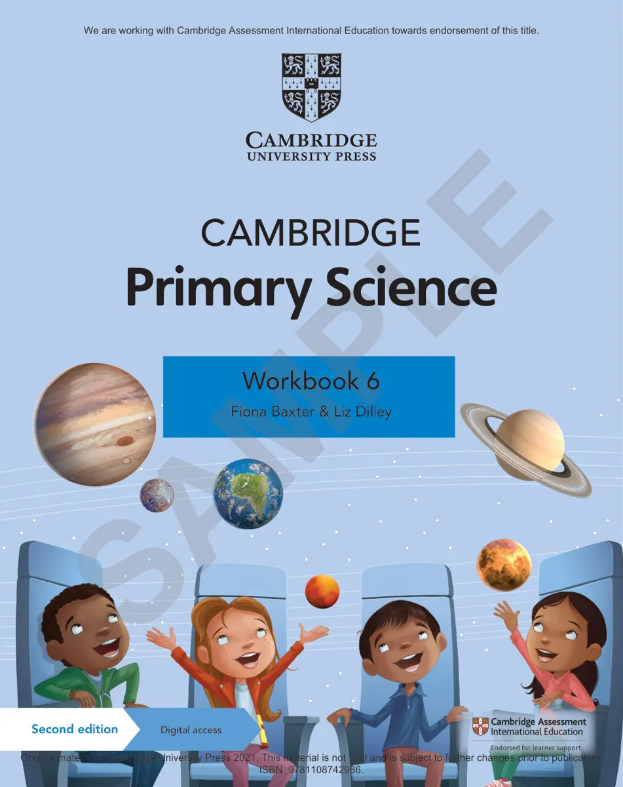
We are working with Cambridge Assessment International Education towards endorsement of this title.
CAMBRIDGE
Primary Science
CAMBRIDGE
Primary Science
Workbook 6
Workbook 6
Fiona Baxter & Liz Dilley
Fiona Baxter & Liz Dilley
Digital access
Second edition
Original material © Cambridge University Press 2021. This material is not final and is subject to further changes prior to publication.
ISBN_9781108742986.
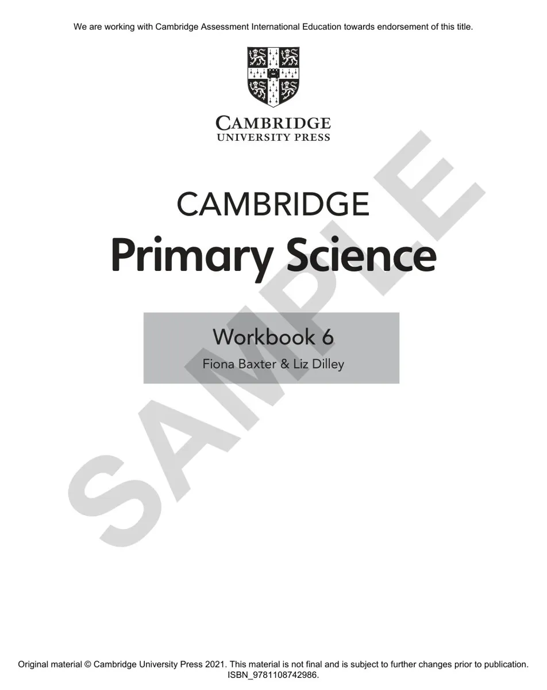
We are working with Cambridge Assessment International Education towards endorsement of this title.
CAMBRIDGE
Primary Science
Workbook 6
Fiona Baxter & Liz Dilley
Original material © Cambridge University Press 2021. This material is not final and is subject to further changes prior to publication.
ISBN_9781108742986.
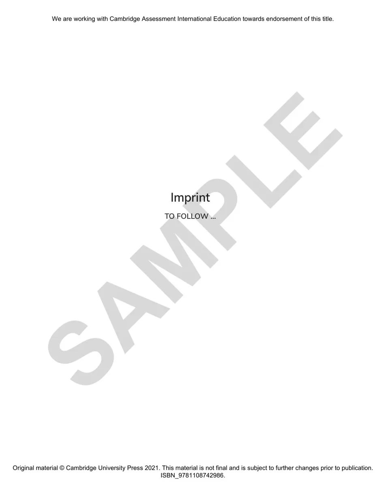
We are working with Cambridge Assessment International Education towards endorsement of this title.
Imprint
TO FOLLOW …
Original material © Cambridge University Press 2021. This material is not final and is subject to further changes prior to publication.
ISBN_9781108742986.
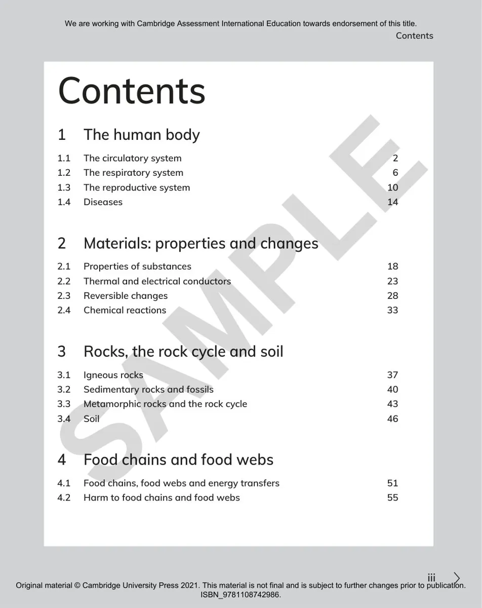
We are working with Cambridge Assessment International Education towards endorsement of this title.
Contents
Contents
1 The human body
1.1
The circulatory system
2
1.2
The respiratory system
6
1.3
The reproductive system
10
1.4
Diseases
14
2 Materials: properties and changes
2.1
Properties of substances
18
2.2
Thermal and electrical conductors
23
2.3
Reversible changes
28
2.4
Chemical reactions
33
3 Rocks, the rock cycle and soil
3.1
Igneous rocks
37
3.2
Sedimentary rocks and fossils
40
3.3
Metamorphic rocks and the rock cycle
43
3.4
Soil
46
4 Food chains and food webs
4.1
Food chains, food webs and energy transfers
51
4.2
Harm to food chains and food webs
55
iii
Original material © Cambridge University Press 2021. This material is not final and is subject to further changes prior to publication.
ISBN_9781108742986.
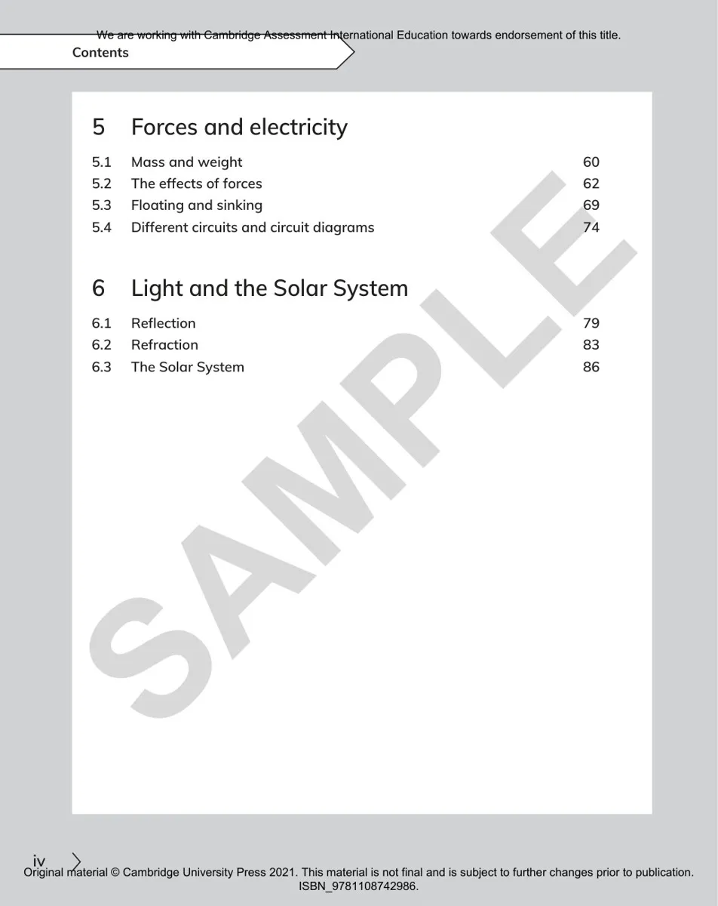
We are working with Cambridge Assessment International Education towards endorsement of this title.
Contents
5 Forces and electricity
5.1
Mass and weight
60
5.2
The effects of forces
62
5.3
Floating and sinking
69
5.4
Different circuits and circuit diagrams
74
6 Light and the Solar System
6.1
Reflection
79
6.2
Refraction
83
6.3
The Solar System
86
iv
Original material © Cambridge University Press 2021. This material is not final and is subject to further changes prior to publication.
ISBN_9781108742986.
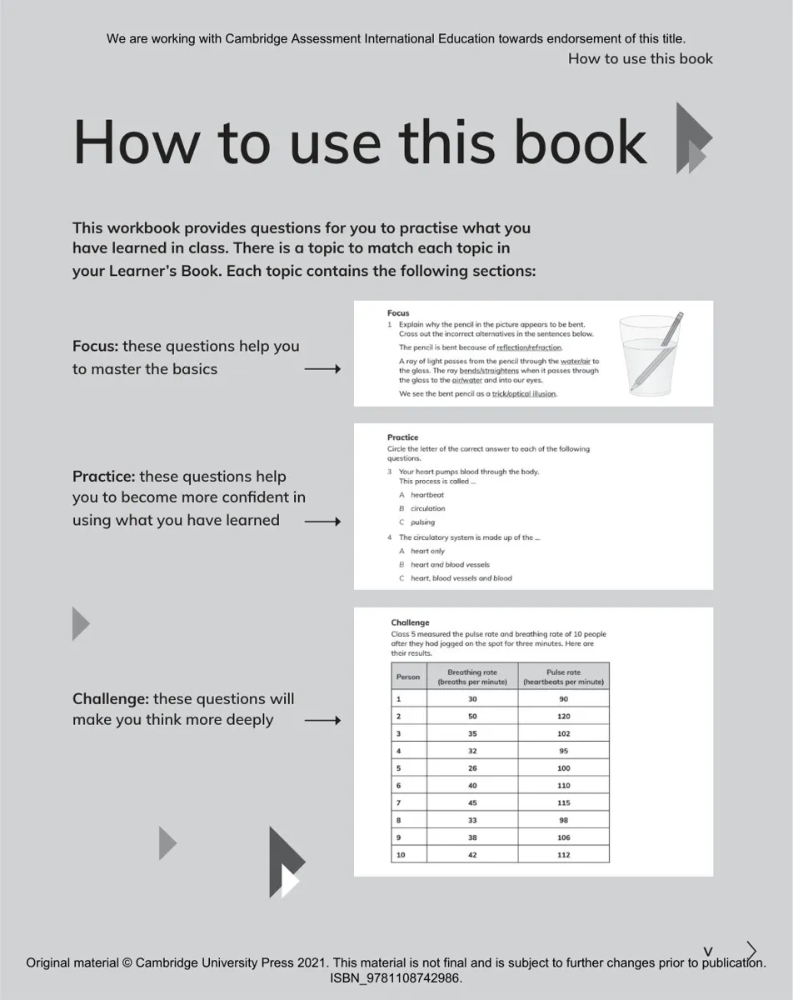
We are working with Cambridge Assessment International Education towards endorsement of this title.
How to use this book
How to use this book
This workbook provides questions for you to practise what you
have learned in class. There is a topic to match each topic in
your Learner’s Book. Each topic contains the following sections:
Focus: these questions help you
to master the basics
Practice: these questions help
you to become more confident in
using what you have learned
Challenge: these questions will
make you think more deeply
v
Original material © Cambridge University Press 2021. This material is not final and is subject to further changes prior to publication.
ISBN_9781108742986.
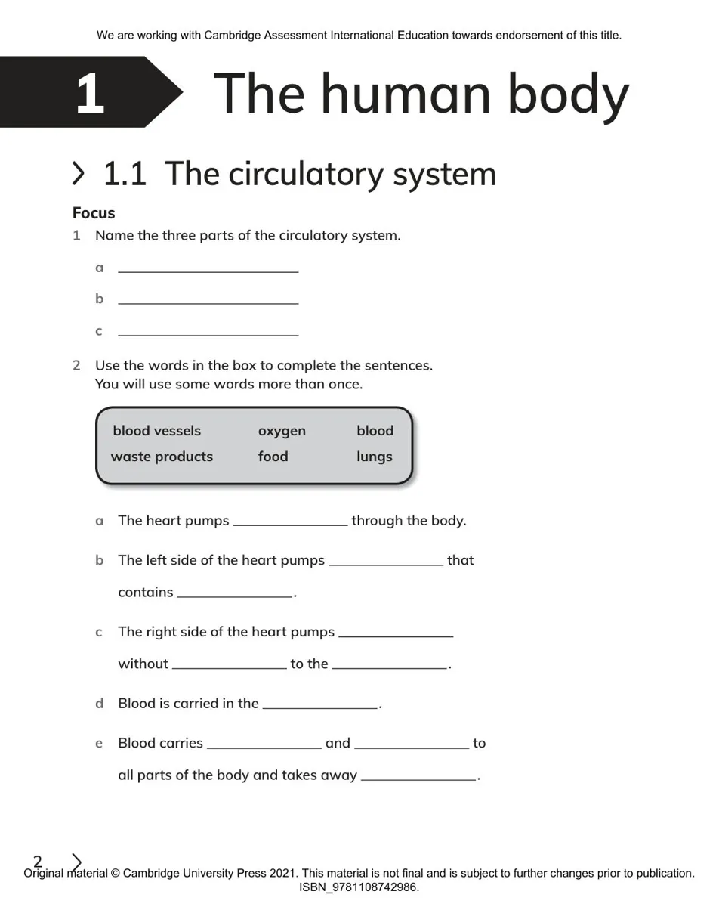
We are working with Cambridge Assessment International Education towards endorsement of this title.
1
The human body
1.1 The circulatory system
Focus
1 Name the three parts of the circulatory system.
a
b
c
2 Use the words in the box to complete the sentences.
You will use some words more than once.
blood vessels
oxygen
blood
waste products
food
lungs
a The heart pumps
through the body.
b The left side of the heart pumps
that
contains
.
c
The right side of the heart pumps
without
to the
.
d Blood is carried in the
.
e
Blood carries
and
to
all parts of the body and takes away
.
2
Original material © Cambridge University Press 2021. This material is not final and is subject to further changes prior to publication.
ISBN_9781108742986.
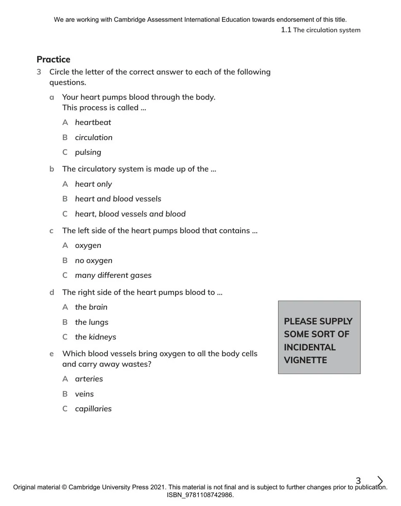
We are working with Cambridge Assessment International Education towards endorsement of this title.
1.1 The circulation system
Practice
3 Circle the letter of the correct answer to each of the following
questions.
a Your heart pumps blood through the body.
This process is called …
Aheartbeat
Bcirculation
Cpulsing
b The circulatory system is made up of the …
Aheart only
Bheart and blood vessels
Cheart, blood vessels and blood
c
The left side of the heart pumps blood that contains …
Aoxygen
Bno oxygen
Cmany different gases
d The right side of the heart pumps blood to …
Athe brain
Bthe lungs
Cthe kidneys
e
Which blood vessels bring oxygen to all the body cells
and carry away wastes?
Aarteries
Bveins
Ccapillaries
PLEASE SUPPLY
SOME SORT OF
INCIDENTAL
VIGNETTE
3
Original material © Cambridge University Press 2021. This material is not final and is subject to further changes prior to publication.
ISBN_9781108742986.
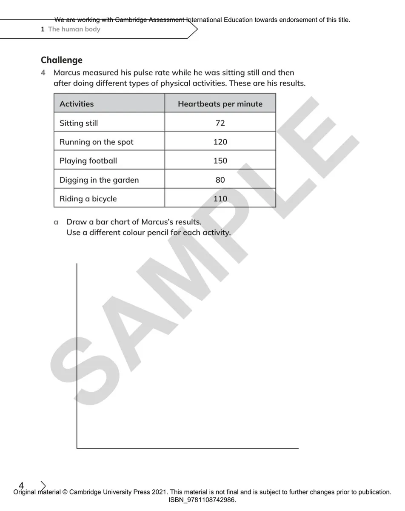
We are working with Cambridge Assessment International Education towards endorsement of this title.
1The human body
Challenge
4 Marcus measured his pulse rate while he was sitting still and then
after doing different types of physical activities. These are his results.
Activities
Heartbeats per minute
Sitting still
72
Running on the spot
120
Playing football
150
Digging in the garden
80
Riding a bicycle
110
a Draw a bar chart of Marcus’s results.
Use a different colour pencil for each activity.
4
Original material © Cambridge University Press 2021. This material is not final and is subject to further changes prior to publication.
ISBN_9781108742986.
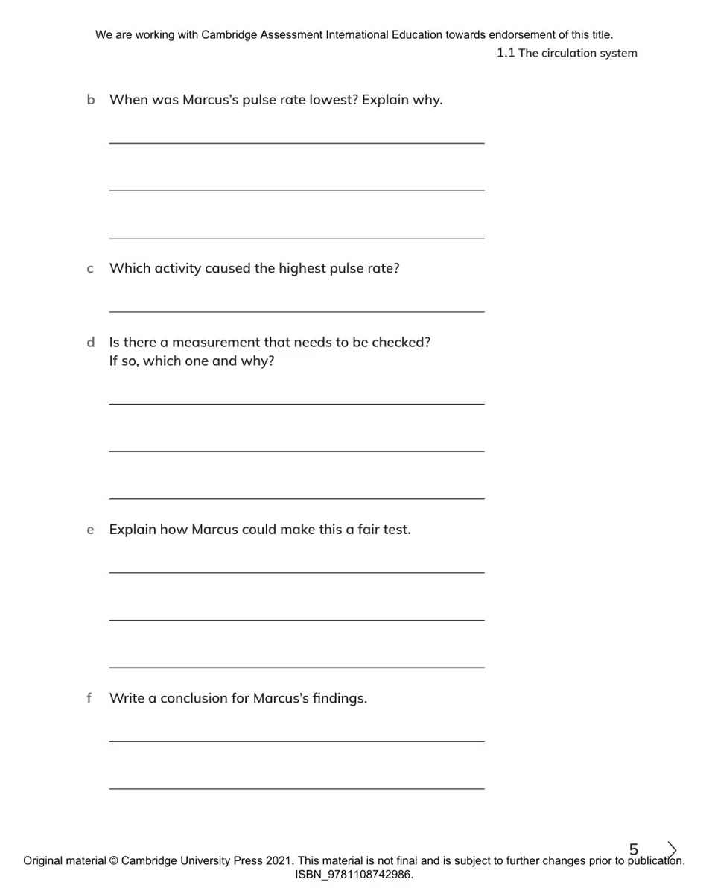
We are working with Cambridge Assessment International Education towards endorsement of this title.
1.1 The circulation system
b When was Marcus’s pulse rate lowest? Explain why.
c
Which activity caused the highest pulse rate?
d Is there a measurement that needs to be checked?
If so, which one and why?
e
Explain how Marcus could make this a fair test.
f
Write a conclusion for Marcus’s findings.
5
Original material © Cambridge University Press 2021. This material is not final and is subject to further changes prior to publication.
ISBN_9781108742986.
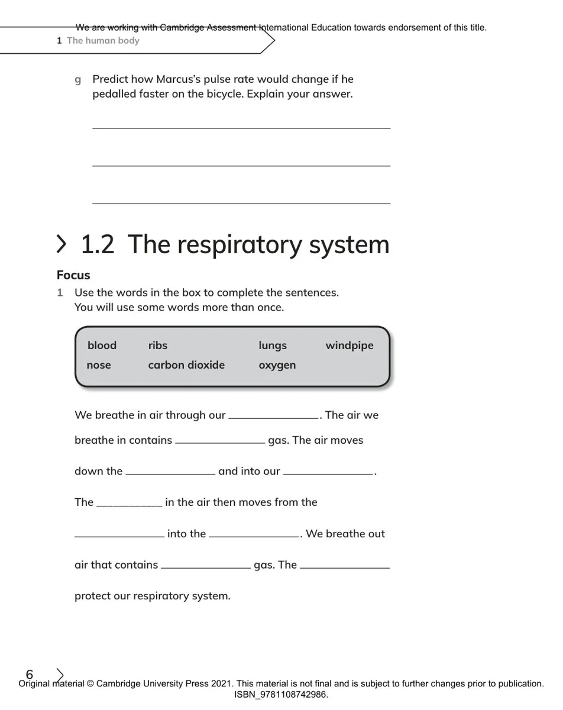
We are working with Cambridge Assessment International Education towards endorsement of this title.
1The human body
g Predict how Marcus’s pulse rate would change if he
pedalled faster on the bicycle. Explain your answer.
1.2 The respiratory system
Focus
1 Use the words in the box to complete the sentences.
You will use some words more than once.
blood
ribs
lungs
windpipe
nose
carbon dioxide
oxygen
We breathe in air through our
. The air we
breathe in contains
gas. The air moves
down the
and into our
.
The ____________ in the air then moves from the
into the
. We breathe out
air that contains
gas. The
protect our respiratory system.
6
Original material © Cambridge University Press 2021. This material is not final and is subject to further changes prior to publication.
ISBN_9781108742986.
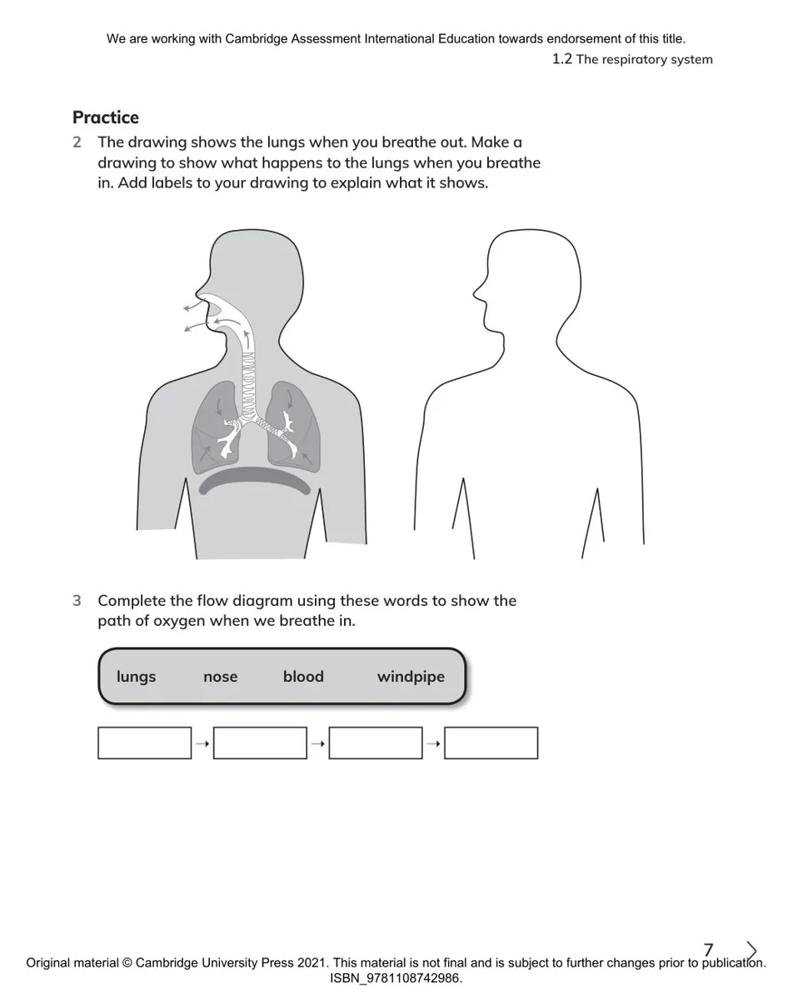
We are working with Cambridge Assessment International Education towards endorsement of this title.
1.2 The respiratory system
Practice
2 The drawing shows the lungs when you breathe out. Make a
drawing to show what happens to the lungs when you breathe
in. Add labels to your drawing to explain what it shows.
3 Complete the fl ow diagram using these words to show the
path of oxygen when we breathe in.
lungs
nose
blood
windpipe
7
Original material © Cambridge University Press 2021. This material is not final and is subject to further changes prior to publication.
ISBN_9781108742986.
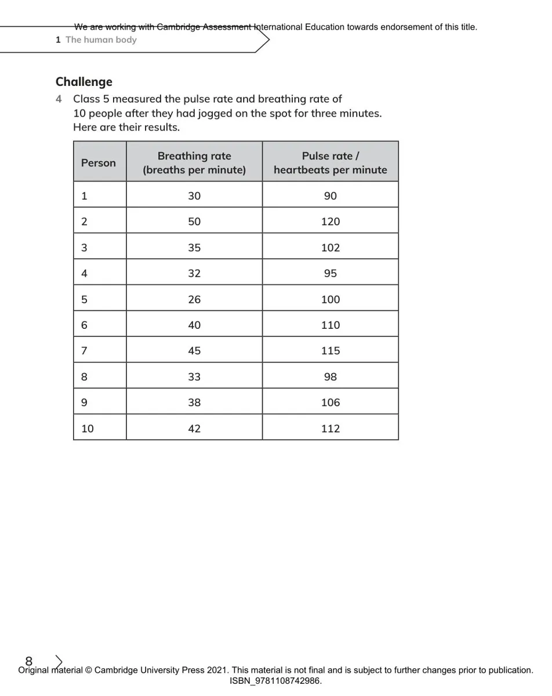
We are working with Cambridge Assessment International Education towards endorsement of this title.
1The human body
Challenge
4 Class 5 measured the pulse rate and breathing rate of
10 people after they had jogged on the spot for three minutes.
Here are their results.
Person
Breathing rate
(breaths per minute)
Pulse rate /
heartbeats per minute
1
30
90
2
50
120
3
35
102
4
32
95
5
26
100
6
40
110
7
45
115
8
33
98
9
38
106
10
42
112
8
Original material © Cambridge University Press 2021. This material is not final and is subject to further changes prior to publication.
ISBN_9781108742986.
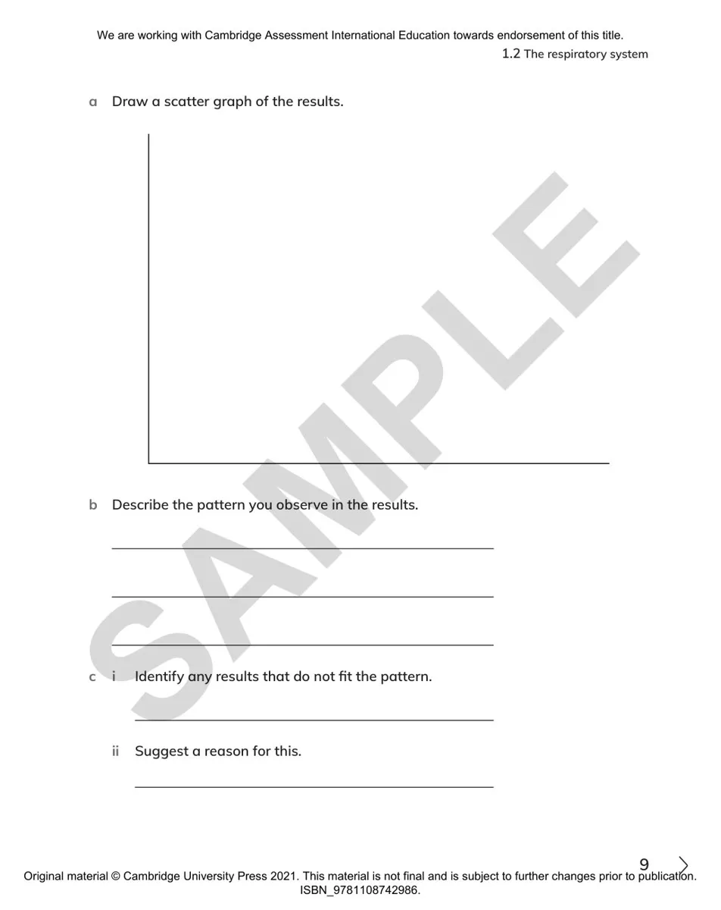
We are working with Cambridge Assessment International Education towards endorsement of this title.
1.2 The respiratory system
a Draw a scatter graph of the results.
b Describe the pattern you observe in the results.
c
i
Identify any results that do not fit the pattern.
ii
Suggest a reason for this.
9
Original material © Cambridge University Press 2021. This material is not final and is subject to further changes prior to publication.
ISBN_9781108742986.
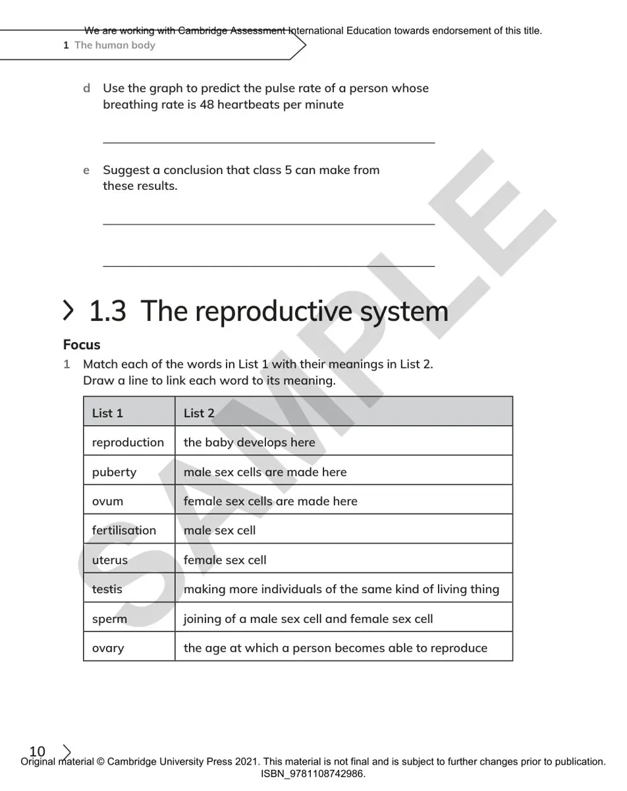
We are working with Cambridge Assessment International Education towards endorsement of this title.
1The human body
d Use the graph to predict the pulse rate of a person whose
breathing rate is 48 heartbeats per minute
e
Suggest a conclusion that class 5 can make from
these results.
1.3 The reproductive system
Focus
1 Match each of the words in List 1 with their meanings in List 2.
Draw a line to link each word to its meaning.
List 1
List 2
reproduction
the baby develops here
puberty
male sex cells are made here
ovum
female sex cells are made here
fertilisation
male sex cell
uterus
female sex cell
testis
making more individuals of the same kind of living thing
sperm
joining of a male sex cell and female sex cell
ovary
the age at which a person becomes able to reproduce
10
Original material © Cambridge University Press 2021. This material is not final and is subject to further changes prior to publication.
ISBN_9781108742986.
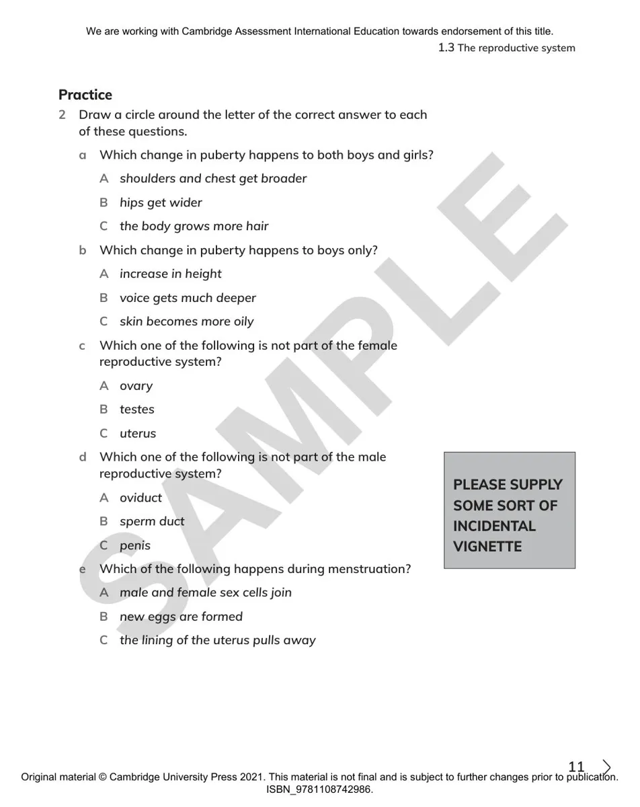
We are working with Cambridge Assessment International Education towards endorsement of this title.
1.3 The reproductive system
Practice
2 Draw a circle around the letter of the correct answer to each
of these questions.
a Which change in puberty happens to both boys and girls?
Ashoulders and chest get broader
Bhips get wider
Cthe body grows more hair
b Which change in puberty happens to boys only?
Aincrease in height
Bvoice gets much deeper
Cskin becomes more oily
c
Which one of the following is not part of the female
reproductive system?
Aovary
Btestes
Cuterus
d Which one of the following is not part of the male
reproductive system?
Aoviduct
Bsperm duct
Cpenis
e
Which of the following happens during menstruation?
Amale and female sex cells join
Bnew eggs are formed
Cthe lining of the uterus pulls away
PLEASE SUPPLY
SOME SORT OF
INCIDENTAL
VIGNETTE
11
Original material © Cambridge University Press 2021. This material is not final and is subject to further changes prior to publication.
ISBN_9781108742986.
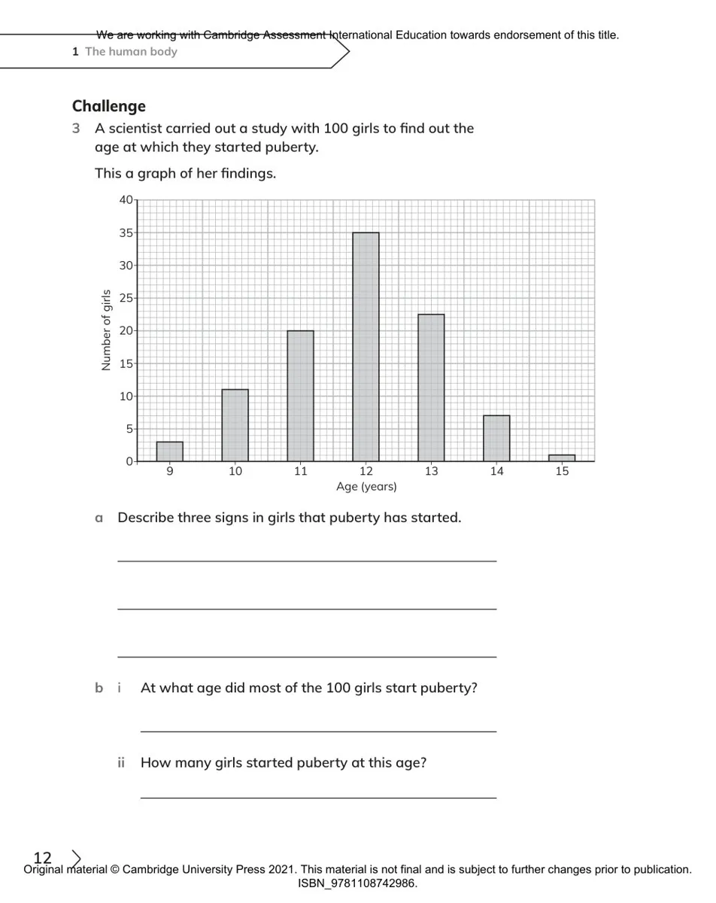
We are working with Cambridge Assessment International Education towards endorsement of this title.
1The human body
Challenge
3 A scientist carried out a study with 100 girls to find out the
age at which they started puberty.
This a graph of her findings.
40
35
30
25
20
15
10
5
0
9
10
11
12
13
14
15
Age (years)
a Describe three signs in girls that puberty has started.
Number of girls
b i
At what age did most of the 100 girls start puberty?
ii
How many girls started puberty at this age?
12
Original material © Cambridge University Press 2021. This material is not final and is subject to further changes prior to publication.
ISBN_9781108742986.
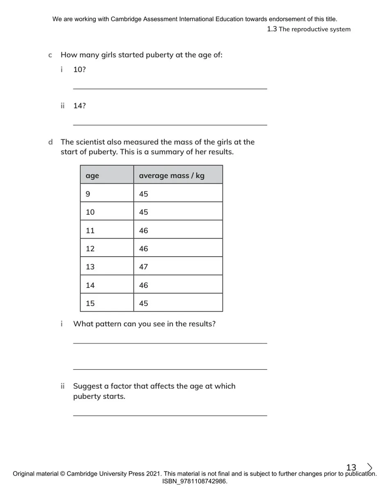
We are working with Cambridge Assessment International Education towards endorsement of this title.
1.3 The reproductive system
c
How many girls started puberty at the age of:
i
10?
ii
14?
d The scientist also measured the mass of the girls at the
start of puberty. This is a summary of her results.
age
average mass / kg
9
45
10
45
11
46
12
46
13
47
14
46
15
45
i
What pattern can you see in the results?
ii
Suggest a factor that affects the age at which
puberty starts.
13
Original material © Cambridge University Press 2021. This material is not final and is subject to further changes prior to publication.
ISBN_9781108742986.
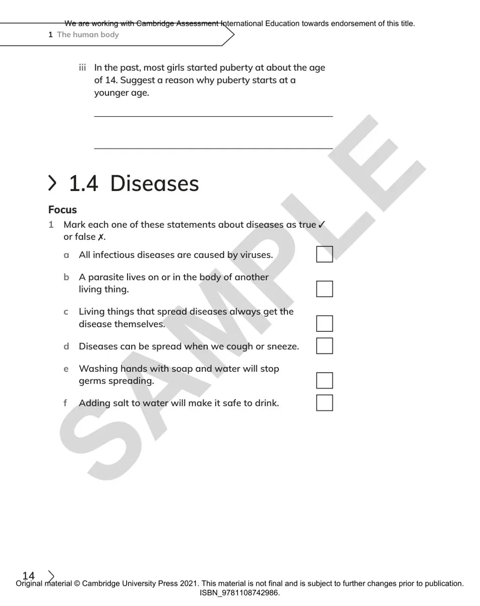
We are working with Cambridge Assessment International Education towards endorsement of this title.
1The human body
iii In the past, most girls started puberty at about the age
of 14. Suggest a reason why puberty starts at a
younger age.
1.4 Diseases
Focus
1 Mark each one of these statements about diseases as true
or false .
a All infectious diseases are caused by viruses.
b A parasite lives on or in the body of another
living thing.
c
Living things that spread diseases always get the
disease themselves.
d Diseases can be spread when we cough or sneeze.
e
Washing hands with soap and water will stop
germs spreading.
f
Adding salt to water will make it safe to drink.
14
Original material © Cambridge University Press 2021. This material is not final and is subject to further changes prior to publication.
ISBN_9781108742986.
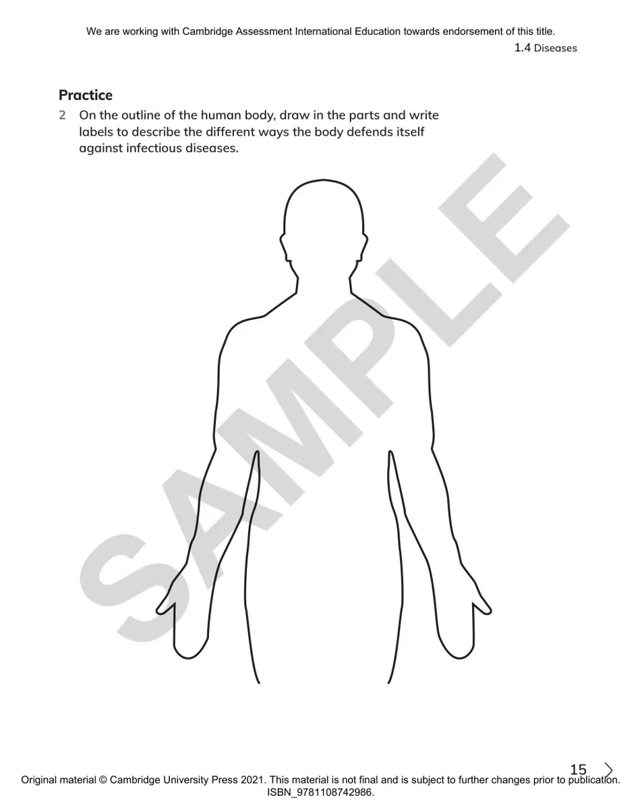
We are working with Cambridge Assessment International Education towards endorsement of this title.
1.4 Diseases
Practice
2 On the outline of the human body, draw in the parts and write
labels to describe the different ways the body defends itself
against infectious diseases.
15
Original material © Cambridge University Press 2021. This material is not final and is subject to further changes prior to publication.
ISBN_9781108742986.
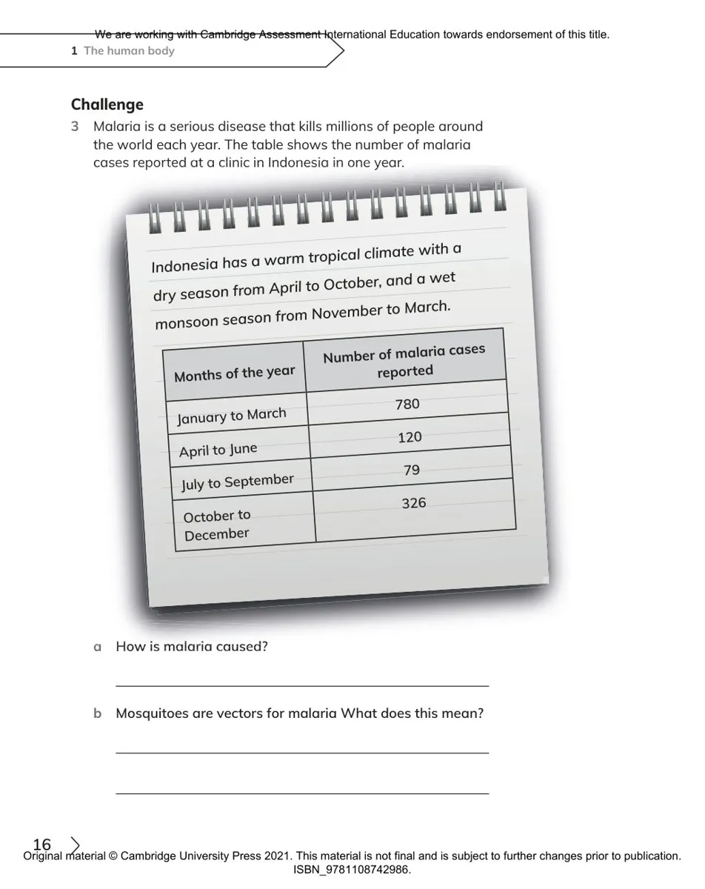
We are working with Cambridge Assessment International Education towards endorsement of this title.
1The human body
Challenge
3 Malaria is a serious disease that kills millions of people around
the world each year. The table shows the number of malaria
cases reported at a clinic in Indonesia in one year.
ca
a
s
s
s
ses reported at a clinic in Indonesia in one year.
s
s
ses reported at a clinic in Indonesia in one year.
ses reported at a clinic in Indone
ses reported at a clinic in
ses reported at
p
a clinic in Indonesia in one year
Indonesia has a warm tropical climate with a
dry season from April to October, and a wet
monsoon season from November to March.
Months of the year
Number of malaria cases
reported
January to March
780
April to June
120
July to September
79
326
October to
December
a How is malaria caused?
a
a
How is malaria cau
How is malaria caused?
How is malaria caused?
s malaria caused?
laria caused?
b Mosquitoes are vectors for malaria What does this mean?
16
Original material © Cambridge University Press 2021. This material is not final and is subject to further changes prior to publication.
ISBN_9781108742986.
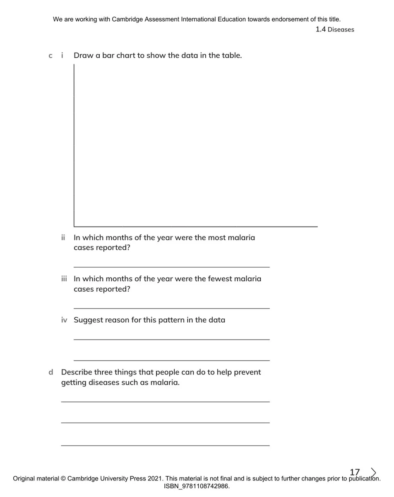
We are working with Cambridge Assessment International Education towards endorsement of this title.
1.4 Diseases
c
i
Draw a bar chart to show the data in the table.
ii
In which months of the year were the most malaria
cases reported?
iii In which months of the year were the fewest malaria
cases reported?
iv Suggest reason for this pattern in the data
d Describe three things that people can do to help prevent
getting diseases such as malaria.
17
Original material © Cambridge University Press 2021. This material is not final and is subject to further changes prior to publication.
ISBN_9781108742986.
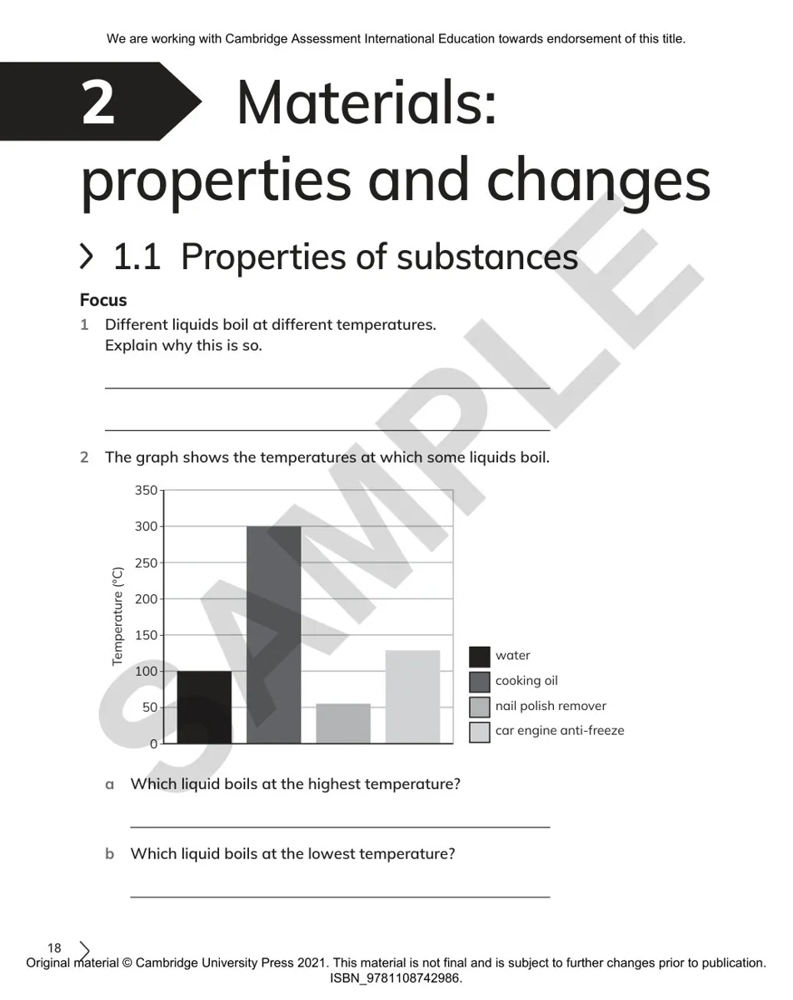
We are working with Cambridge Assessment International Education towards endorsement of this title.
2
Materials:
properties and changes
1.1 Properties of substances
Focus
1 Different liquids boil at different temperatures.
Explain why this is so.
2 The graph shows the temperatures at which some liquids boil.
350
300
250
200
150
100
50
0
a Which liquid boils at the highest temperature?
Temperature (°C)
water
cooking oil
nail polish remover
car engine anti-freeze
b Which liquid boils at the lowest temperature?
18
Original material © Cambridge University Press 2021. This material is not final and is subject to further changes prior to publication.
ISBN_9781108742986.
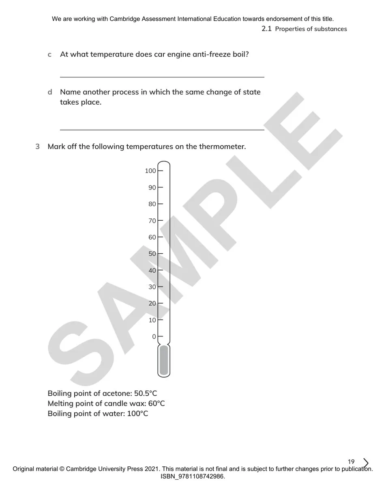
We are working with Cambridge Assessment International Education towards endorsement of this title.
2.1 Properties of substances
c
At what temperature does car engine anti-freeze boil?
d Name another process in which the same change of state
takes place.
3 Mark off the following temperatures on the thermometer.
100
90
80
70
60
50
40
30
20
10
0
Boiling point of acetone: 50.5°C
Melting point of candle wax: 60°C
Boiling point of water: 100°C
19
Original material © Cambridge University Press 2021. This material is not final and is subject to further changes prior to publication.
ISBN_9781108742986.
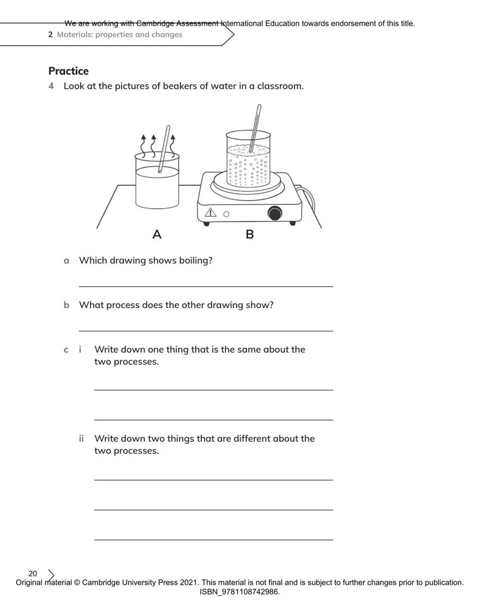
We are working with Cambridge Assessment International Education towards endorsement of this title.
2Materials: properties and changes
Practice
4 Look at the pictures of beakers of water in a classroom.
A
B
a Which drawing shows boiling?
b What process does the other drawing show?
c
i
Write down one thing that is the same about the
two processes.
ii
Write down two things that are different about the
two processes.
20
Original material © Cambridge University Press 2021. This material is not final and is subject to further changes prior to publication.
ISBN_9781108742986.
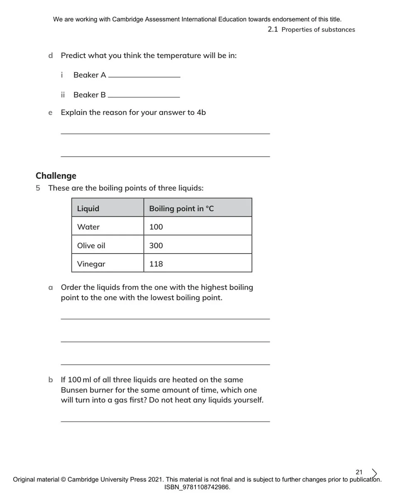
We are working with Cambridge Assessment International Education towards endorsement of this title.
2.1 Properties of substances
d Predict what you think the temperature will be in:
i
Beaker A
ii
Beaker B
e
Explain the reason for your answer to 4b
Challenge
5 These are the boiling points of three liquids:
Liquid
Boiling point in °C
Water
100
Olive oil
300
Vinegar
118
a Order the liquids from the one with the highest boiling
point to the one with the lowest boiling point.
b If 100 ml of all three liquids are heated on the same
Bunsen burner for the same amount of time, which one
will turn into a gas first? Do not heat any liquids yourself.
21
Original material © Cambridge University Press 2021. This material is not final and is subject to further changes prior to publication.
ISBN_9781108742986.
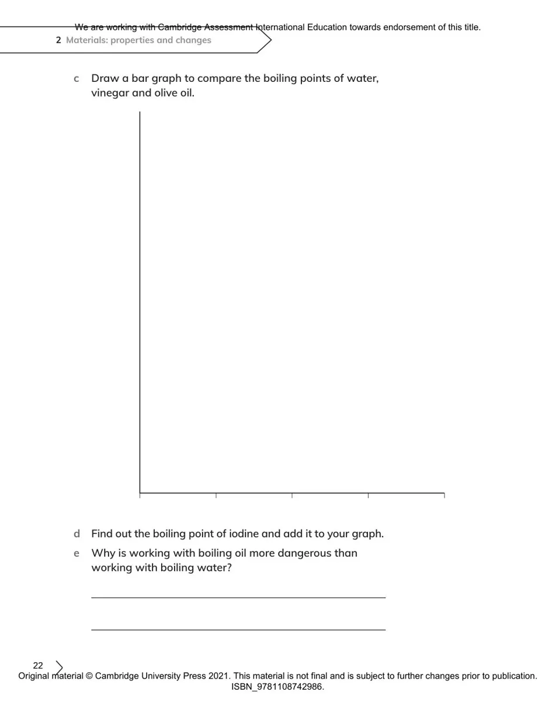
We are working with Cambridge Assessment International Education towards endorsement of this title.
2Materials: properties and changes
c
Draw a bar graph to compare the boiling points of water,
vinegar and olive oil.
d Find out the boiling point of iodine and add it to your graph.
e
Why is working with boiling oil more dangerous than
working with boiling water?
22
Original material © Cambridge University Press 2021. This material is not final and is subject to further changes prior to publication.
ISBN_9781108742986.
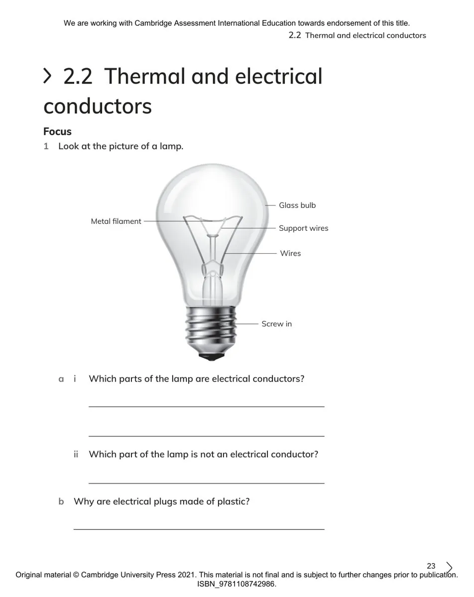
We are working with Cambridge Assessment International Education towards endorsement of this title.
2.2 Thermal and electrical conductors
2.2 Thermal and electrical
conductors
Focus
1 Look at the picture of a lamp.
Glass bulb
Support wires
Wires
Metal filament
Screw in
a i
Which parts of the lamp are electrical conductors?
ii
Which part of the lamp is not an electrical conductor?
b Why are electrical plugs made of plastic?
23
Original material © Cambridge University Press 2021. This material is not final and is subject to further changes prior to publication.
ISBN_9781108742986.
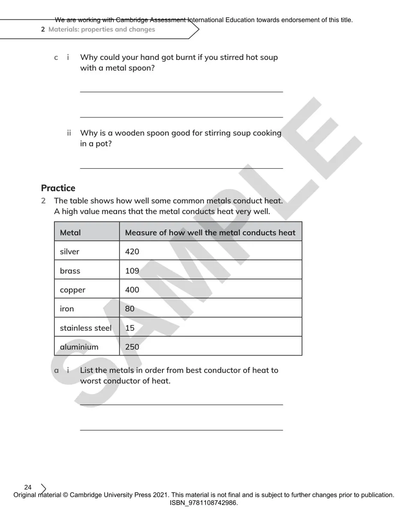
We are working with Cambridge Assessment International Education towards endorsement of this title.
2Materials: properties and changes
c
i
Why could your hand got burnt if you stirred hot soup
with a metal spoon?
ii
Why is a wooden spoon good for stirring soup cooking
in a pot?
Practice
2 The table shows how well some common metals conduct heat.
A high value means that the metal conducts heat very well.
Metal
Measure of how well the metal conducts heat
silver
420
brass
109
copper
400
iron
80
stainless steel
15
aluminium
250
a i
List the metals in order from best conductor of heat to
worst conductor of heat.
24
Original material © Cambridge University Press 2021. This material is not final and is subject to further changes prior to publication.
ISBN_9781108742986.
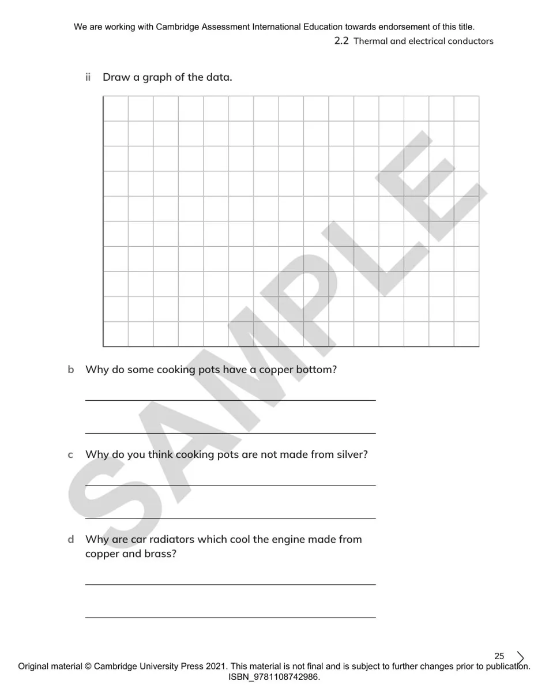
We are working with Cambridge Assessment International Education towards endorsement of this title.
2.2 Thermal and electrical conductors
ii
Draw a graph of the data.
b Why do some cooking pots have a copper bottom?
c
Why do you think cooking pots are not made from silver?
d Why are car radiators which cool the engine made from
copper and brass?
25
Original material © Cambridge University Press 2021. This material is not final and is subject to further changes prior to publication.
ISBN_9781108742986.
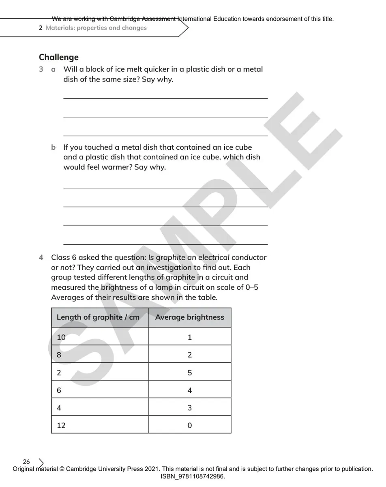
We are working with Cambridge Assessment International Education towards endorsement of this title.
2Materials: properties and changes
Challenge
3 aWill a block of ice melt quicker in a plastic dish or a metal
dish of the same size? Say why.
b If you touched a metal dish that contained an ice cube
and a plastic dish that contained an ice cube, which dish
would feel warmer? Say why.
4 Class 6 asked the question: Is graphite an electrical conductor
or not? They carried out an investigation to find out. Each
group tested different lengths of graphite in a circuit and
measured the brightness of a lamp in circuit on scale of 0–5
Averages of their results are shown in the table.
Length of graphite / cm
Average brightness
10
1
8
2
2
5
6
4
4
3
12
0
26
Original material © Cambridge University Press 2021. This material is not final and is subject to further changes prior to publication.
ISBN_9781108742986.
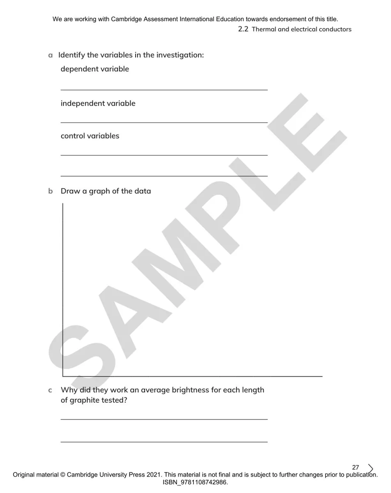
We are working with Cambridge Assessment International Education towards endorsement of this title.
2.2 Thermal and electrical conductors
a Identify the variables in the investigation:
dependent variable
independent variable
control variables
b Draw a graph of the data
c
Why did they work an average brightness for each length
of graphite tested?
27
Original material © Cambridge University Press 2021. This material is not final and is subject to further changes prior to publication.
ISBN_9781108742986.
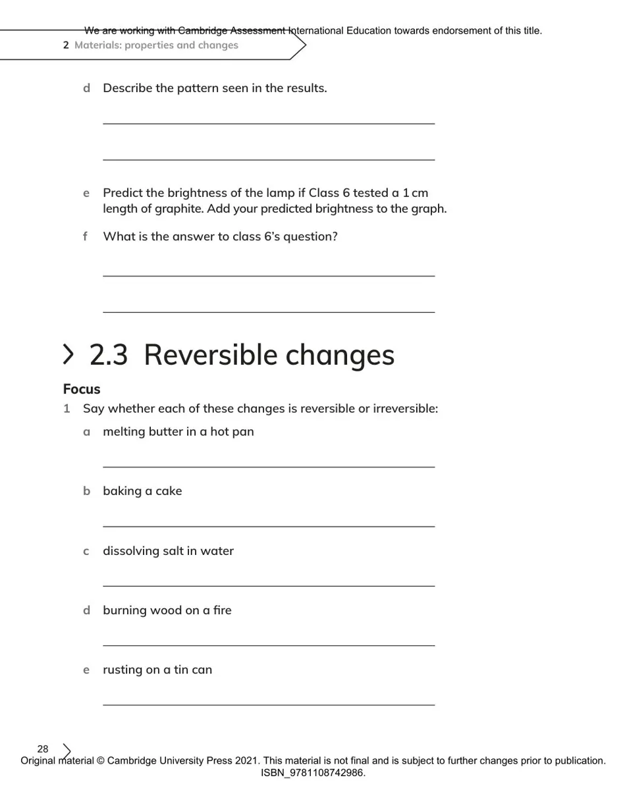
We are working with Cambridge Assessment International Education towards endorsement of this title.
2Materials: properties and changes
d Describe the pattern seen in the results.
e
Predict the brightness of the lamp if Class 6 tested a 1 cm
length of graphite. Add your predicted brightness to the graph.
f
What is the answer to class 6’s question?
2.3 Reversible changes
Focus
1 Say whether each of these changes is reversible or irreversible:
a melting butter in a hot pan
b baking a cake
c
dissolving salt in water
d burning wood on a fire
e
rusting on a tin can
28
Original material © Cambridge University Press 2021. This material is not final and is subject to further changes prior to publication.
ISBN_9781108742986.
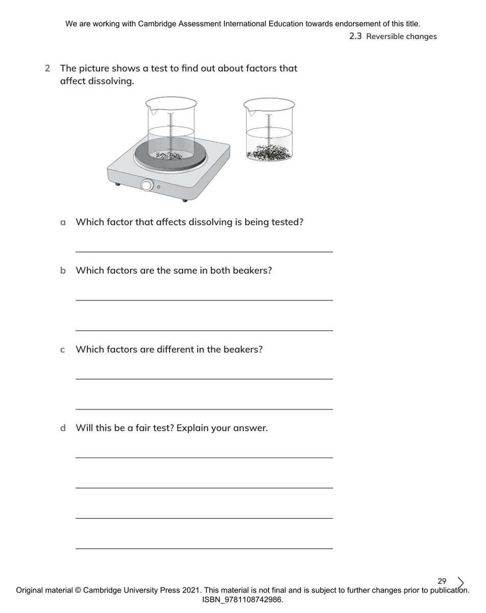
We are working with Cambridge Assessment International Education towards endorsement of this title.
2.3 Reversible changes
2 The picture shows a test to fi nd out about factors that
affect dissolving.
a Which factor that affects dissolving is being tested?
b Which factors are the same in both beakers?
c
Which factors are different in the beakers?
d Will this be a fair test? Explain your answer.
29
Original material © Cambridge University Press 2021. This material is not final and is subject to further changes prior to publication.
ISBN_9781108742986.
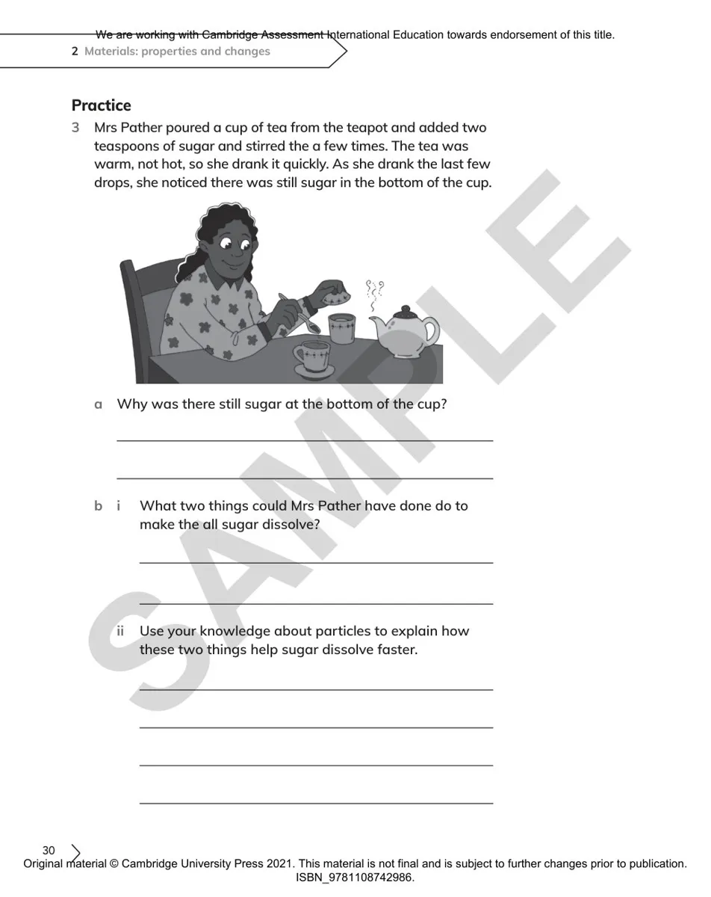
We are working with Cambridge Assessment International Education towards endorsement of this title.
2Materials: properties and changes
Practice
3 Mrs Pather poured a cup of tea from the teapot and added two
teaspoons of sugar and stirred the a few times. The tea was
warm, not hot, so she drank it quickly. As she drank the last few
drops, she noticed there was still sugar in the bottom of the cup.
a Why was there still sugar at the bottom of the cup?
b i
What two things could Mrs Pather have done do to
make the all sugar dissolve?
ii
Use your knowledge about particles to explain how
these two things help sugar dissolve faster.
30
Original material © Cambridge University Press 2021. This material is not final and is subject to further changes prior to publication.
ISBN_9781108742986.
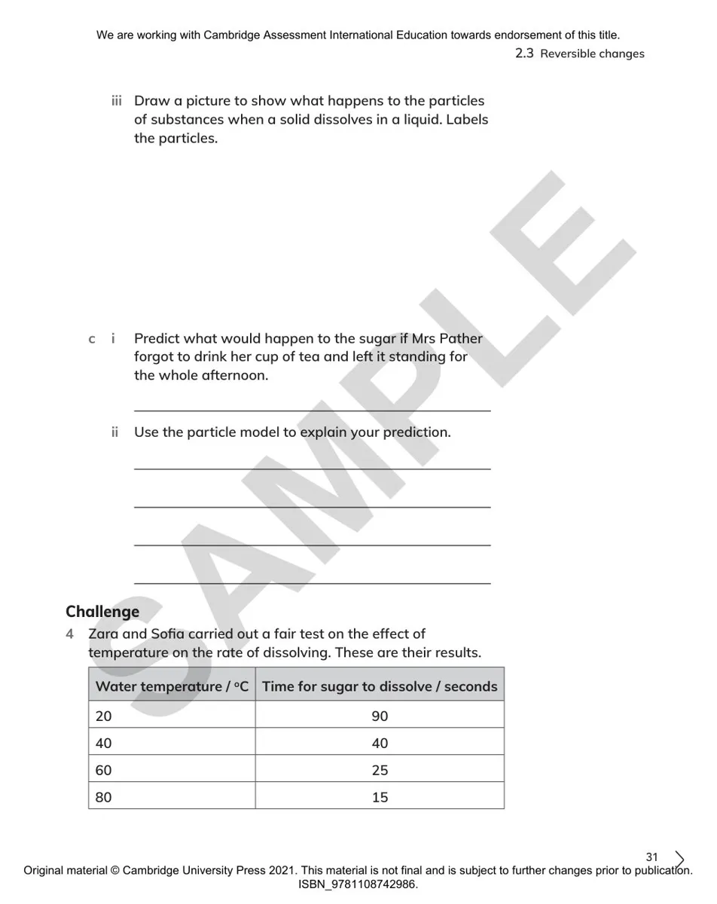
We are working with Cambridge Assessment International Education towards endorsement of this title.
2.3 Reversible changes
iii Draw a picture to show what happens to the particles
of substances when a solid dissolves in a liquid. Labels
the particles.
c
i
Predict what would happen to the sugar if Mrs Pather
forgot to drink her cup of tea and left it standing for
the whole afternoon.
ii
Use the particle model to explain your prediction.
Challenge
4 Zara and Sofia carried out a fair test on the effect of
temperature on the rate of dissolving. These are their results.
Water temperature / oC
Time for sugar to dissolve / seconds
20
90
40
40
60
25
80
15
31
Original material © Cambridge University Press 2021. This material is not final and is subject to further changes prior to publication.
ISBN_9781108742986.
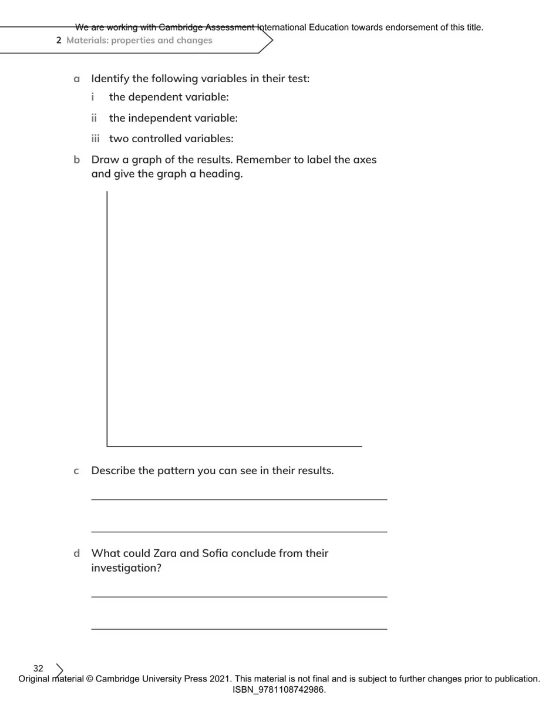
We are working with Cambridge Assessment International Education towards endorsement of this title.
2Materials: properties and changes
a Identify the following variables in their test:
i
the dependent variable:
ii
the independent variable:
iii two controlled variables:
b Draw a graph of the results. Remember to label the axes
and give the graph a heading.
c
Describe the pattern you can see in their results.
d What could Zara and Sofia conclude from their
investigation?
32
Original material © Cambridge University Press 2021. This material is not final and is subject to further changes prior to publication.
ISBN_9781108742986.
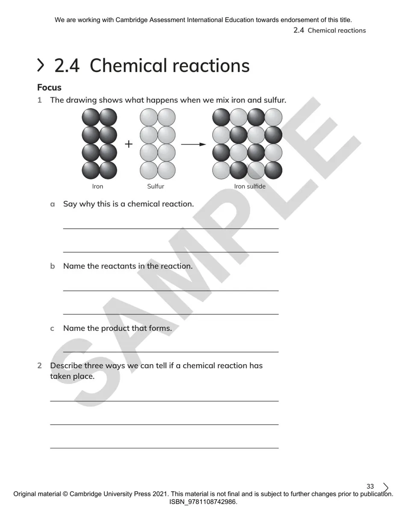
We are working with Cambridge Assessment International Education towards endorsement of this title.
2.4 Chemical reactions
2.4 Chemical reactions
Focus
1 The drawing shows what happens when we mix iron and sulfur.
+
Iron
Sulfur
a Say why this is a chemical reaction.
Iron sulfide
b Name the reactants in the reaction.
c
Name the product that forms.
2 Describe three ways we can tell if a chemical reaction has
taken place.
33
Original material © Cambridge University Press 2021. This material is not final and is subject to further changes prior to publication.
ISBN_9781108742986.
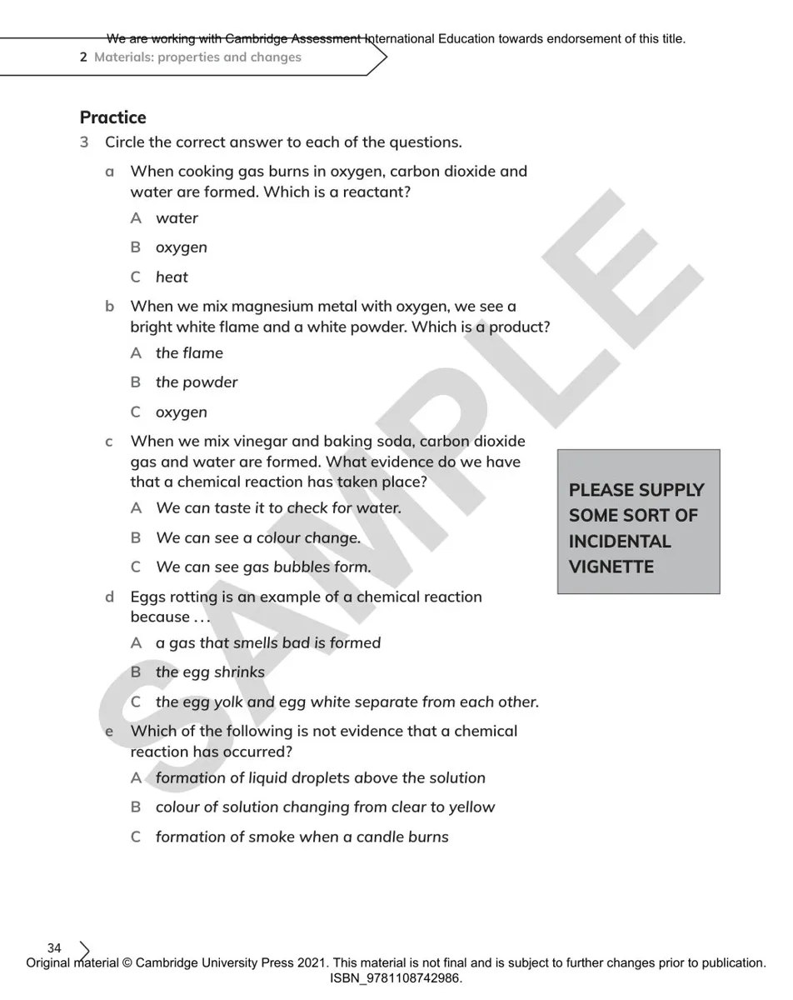
We are working with Cambridge Assessment International Education towards endorsement of this title.
2Materials: properties and changes
Practice
3 Circle the correct answer to each of the questions.
a When cooking gas burns in oxygen, carbon dioxide and
water are formed. Which is a reactant?
Awater
Boxygen
Cheat
b When we mix magnesium metal with oxygen, we see a
bright white flame and a white powder. Which is a product?
Athe flame
Bthe powder
Coxygen
c
When we mix vinegar and baking soda, carbon dioxide
gas and water are formed. What evidence do we have
that a chemical reaction has taken place?
AWe can taste it to check for water.
BWe can see a colour change.
CWe can see gas bubbles form.
d Eggs rotting is an example of a chemical reaction
because . . .
Aa gas that smells bad is formed
Bthe egg shrinks
Cthe egg yolk and egg white separate from each other.
e
Which of the following is not evidence that a chemical
reaction has occurred?
Aformation of liquid droplets above the solution
Bcolour of solution changing from clear to yellow
Cformation of smoke when a candle burns
PLEASE SUPPLY
SOME SORT OF
INCIDENTAL
VIGNETTE
34
Original material © Cambridge University Press 2021. This material is not final and is subject to further changes prior to publication.
ISBN_9781108742986.
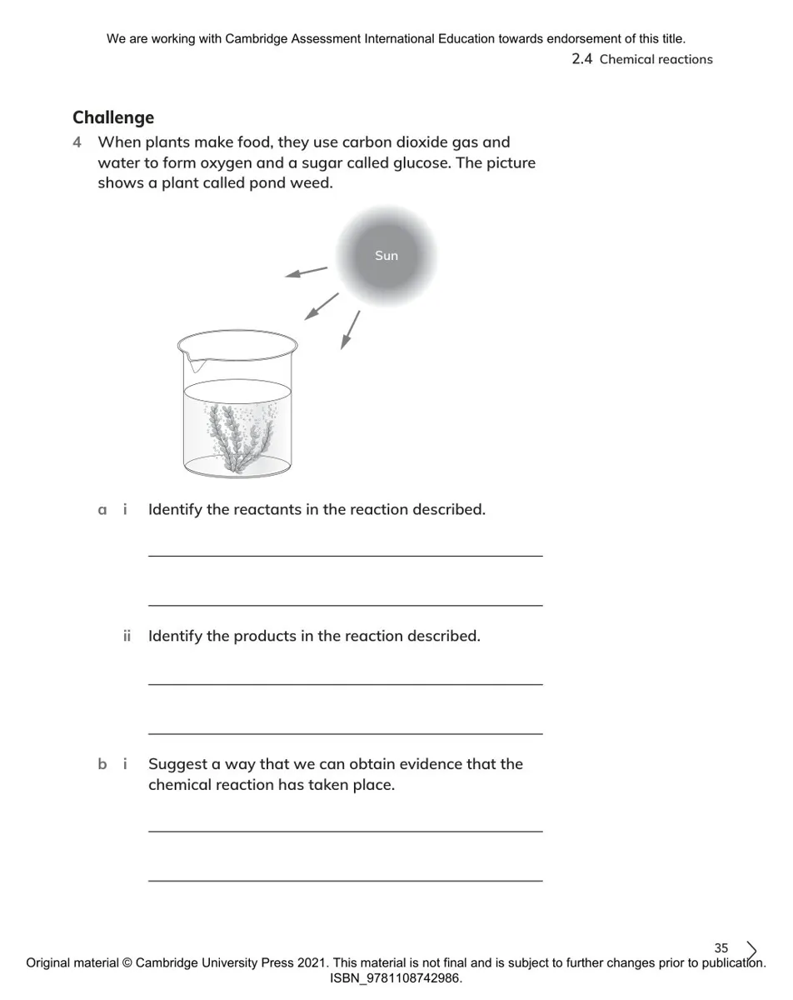
We are working with Cambridge Assessment International Education towards endorsement of this title.
2.4 Chemical reactions
Challenge
4 When plants make food, they use carbon dioxide gas and
water to form oxygen and a sugar called glucose. The picture
shows a plant called pond weed.
Sun
a i
Identify the reactants in the reaction described.
ii
Identify the products in the reaction described.
b i
Suggest a way that we can obtain evidence that the
chemical reaction has taken place.
35
Original material © Cambridge University Press 2021. This material is not final and is subject to further changes prior to publication.
ISBN_9781108742986.
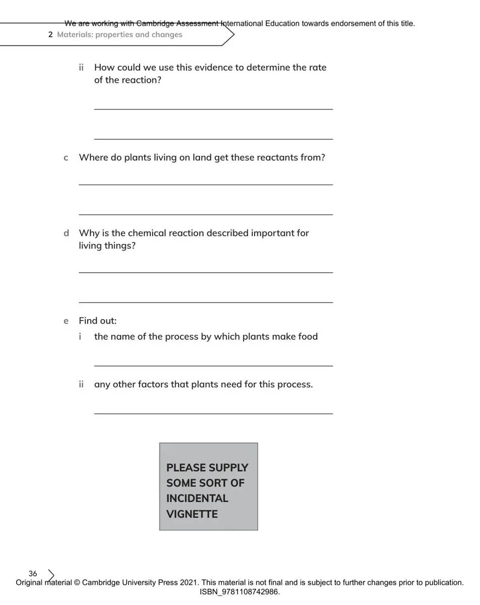
We are working with Cambridge Assessment International Education towards endorsement of this title.
2Materials: properties and changes
ii
How could we use this evidence to determine the rate
of the reaction?
c
Where do plants living on land get these reactants from?
d Why is the chemical reaction described important for
living things?
e
Find out:
i
the name of the process by which plants make food
ii
any other factors that plants need for this process.
PLEASE SUPPLY
SOME SORT OF
INCIDENTAL
VIGNETTE
36
Original material © Cambridge University Press 2021. This material is not final and is subject to further changes prior to publication.
ISBN_9781108742986.
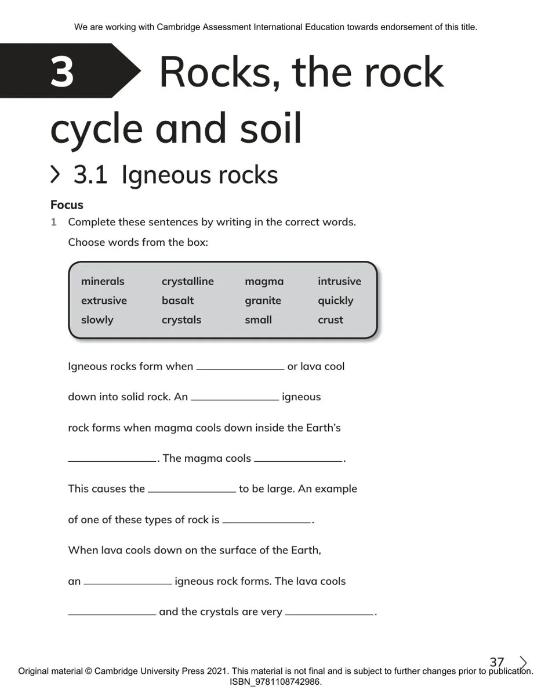
We are working with Cambridge Assessment International Education towards endorsement of this title.
3
Rocks, the rock
cycle and soil
3.1 Igneous rocks
Focus
1 Complete these sentences by writing in the correct words.
Choose words from the box:
minerals
crystalline
magma
intrusive
extrusive
basalt
granite
quickly
slowly
crystals
small
crust
Igneous rocks form when
or lava cool
down into solid rock. An
igneous
rock forms when magma cools down inside the Earth’s
. The magma cools
.
This causes the
to be large. An example
of one of these types of rock is
.
When lava cools down on the surface of the Earth,
an
igneous rock forms. The lava cools
and the crystals are very
.
37
Original material © Cambridge University Press 2021. This material is not final and is subject to further changes prior to publication.
ISBN_9781108742986.
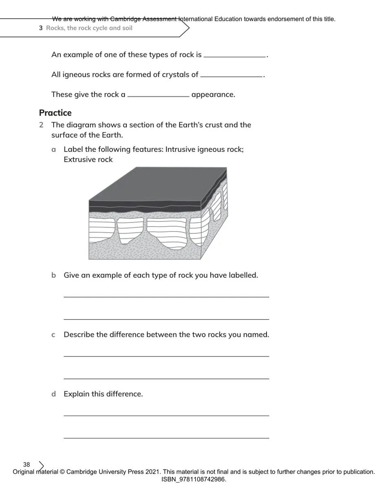
We are working with Cambridge Assessment International Education towards endorsement of this title.
3Rocks, the rock cycle and soil
An example of one of these types of rock is
.
All igneous rocks are formed of crystals of
.
These give the rock a
appearance.
Practice
2 The diagram shows a section of the Earth’s crust and the
surface of the Earth.
a Label the following features: Intrusive igneous rock;
Extrusive rock
b Give an example of each type of rock you have labelled.
c
Describe the difference between the two rocks you named.
d Explain this difference.
38
Original material © Cambridge University Press 2021. This material is not final and is subject to further changes prior to publication.
ISBN_9781108742986.
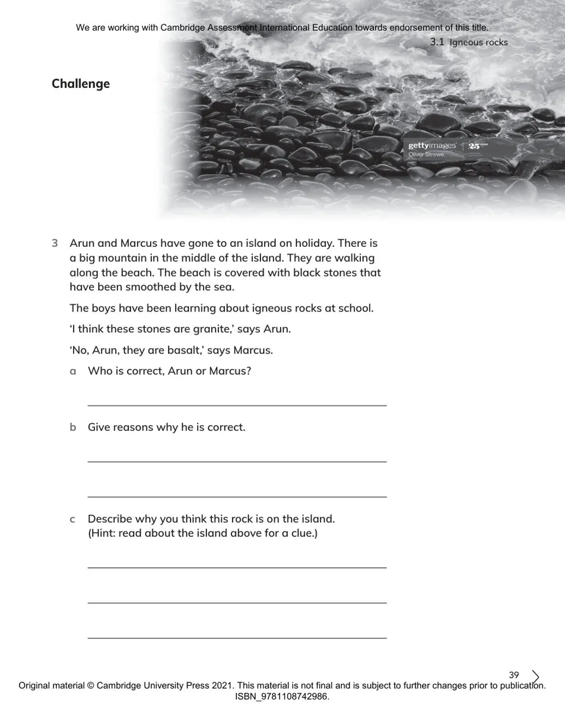
We are working with Cambridge Assessment International Education towards endorsement of this title.
3.1 Igneous rocks
Challenge
3 Arun and Marcus have gone to an island on holiday. There is
a big mountain in the middle of the island. They are walking
along the beach. The beach is covered with black stones that
have been smoothed by the sea.
The boys have been learning about igneous rocks at school.
‘I think these stones are granite,’ says Arun.
‘No, Arun, they are basalt,’ says Marcus.
a Who is correct, Arun or Marcus?
b Give reasons why he is correct.
c
Describe why you think this rock is on the island.
(Hint: read about the island above for a clue.)
39
Original material © Cambridge University Press 2021. This material is not final and is subject to further changes prior to publication.
ISBN_9781108742986.
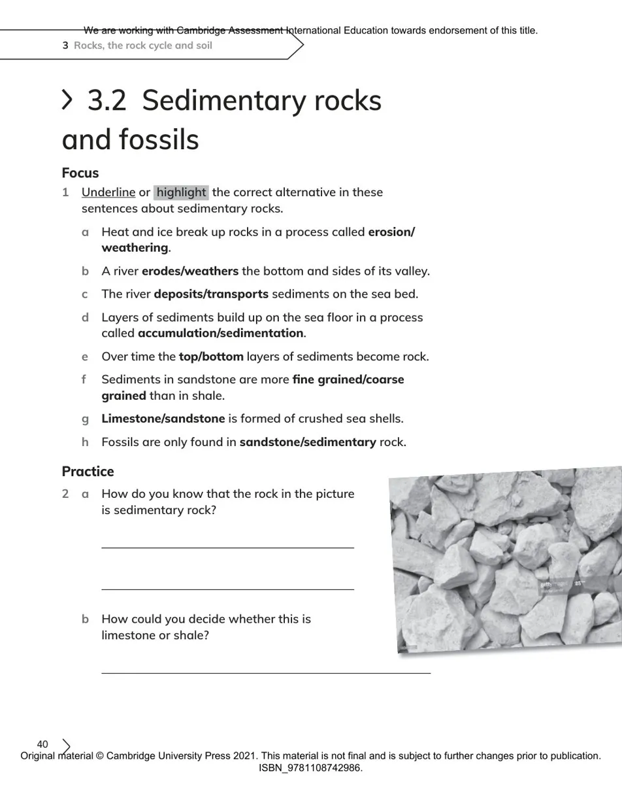
We are working with Cambridge Assessment International Education towards endorsement of this title.
3Rocks, the rock cycle and soil
3.2 Sedimentary rocks
and fossils
Focus
1 Underline or highlight the correct alternative in these
sentences about sedimentary rocks.
a Heat and ice break up rocks in a process called erosion/
weathering.
b A river erodes/weathers the bottom and sides of its valley.
c
The river deposits/transports sediments on the sea bed.
d Layers of sediments build up on the sea fl oor in a process
called accumulation/sedimentation.
e
Over time the top/bottom layers of sediments become rock.
f
Sediments in sandstone are more fi ne grained/coarse
grained than in shale.
g Limestone/sandstone is formed of crushed sea shells.
h Fossils are only found in sandstone/sedimentary rock.
Practice
2 a How do you know that the rock in the picture
is sedimentary rock?
b How could you decide whether this is
limestone or shale?
40
Original material © Cambridge University Press 2021. This material is not final and is subject to further changes prior to publication.
ISBN_9781108742986.
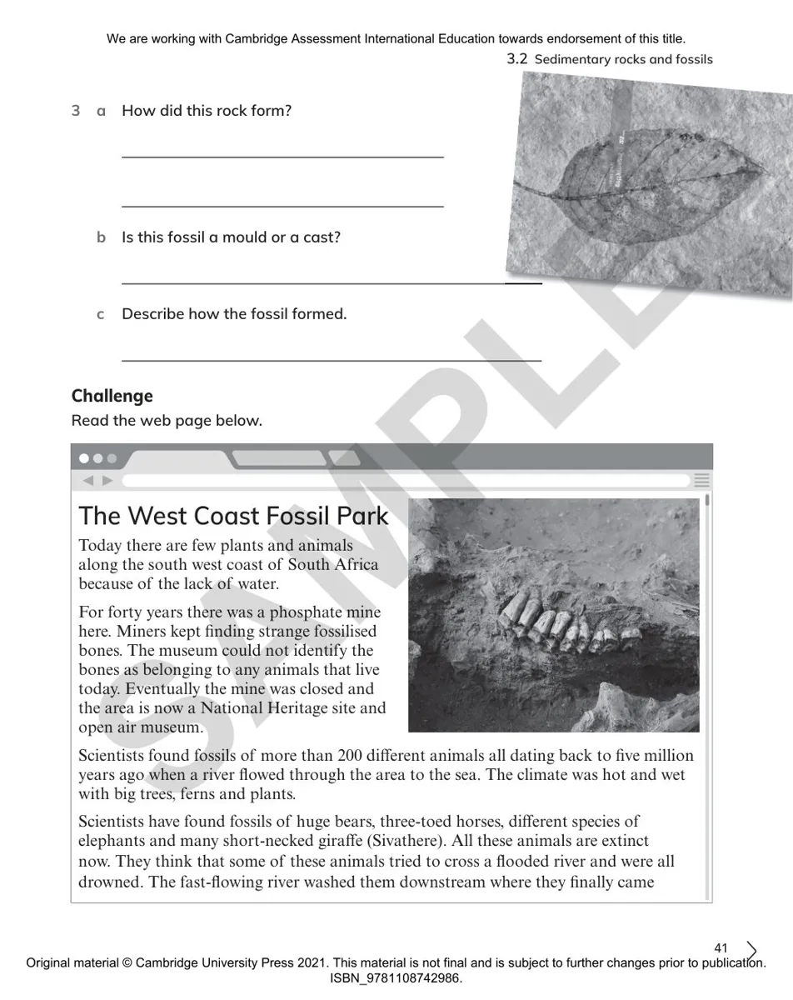
We are working with Cambridge Assessment International Education towards endorsement of this title.
3.2 Sedimentary rocks and fossils
3 a How did this rock form?
b Is this fossil a mould or a cast?
c
Describe how the fossil formed.
Challenge
Read the web page below.
The West Coast Fossil Park
Today there are few plants and animals
along the south west coast of South Africa
because of the lack of water.
For forty years there was a phosphate mine
here. Miners kept fi nding strange fossilised
bones. The museum could not identify the
bones as belonging to any animals that live
today. Eventually the mine was closed and
the area is now a National Heritage site and
open air museum.
Scientists found fossils of more than 200 diff erent animals all dating back to fi ve million
years ago when a river fl owed through the area to the sea. The climate was hot and wet
with big trees, ferns and plants.
Scientists have found fossils of huge bears, three-toed horses, diff erent species of
elephants and many short-necked giraff e (Sivathere). All these animals are extinct
now. They think that some of these animals tried to cross a fl ooded river and were all
drowned. The fast-fl owing river washed them downstream where they fi nally came
41
Original material © Cambridge University Press 2021. This material is not final and is subject to further changes prior to publication.
ISBN_9781108742986.
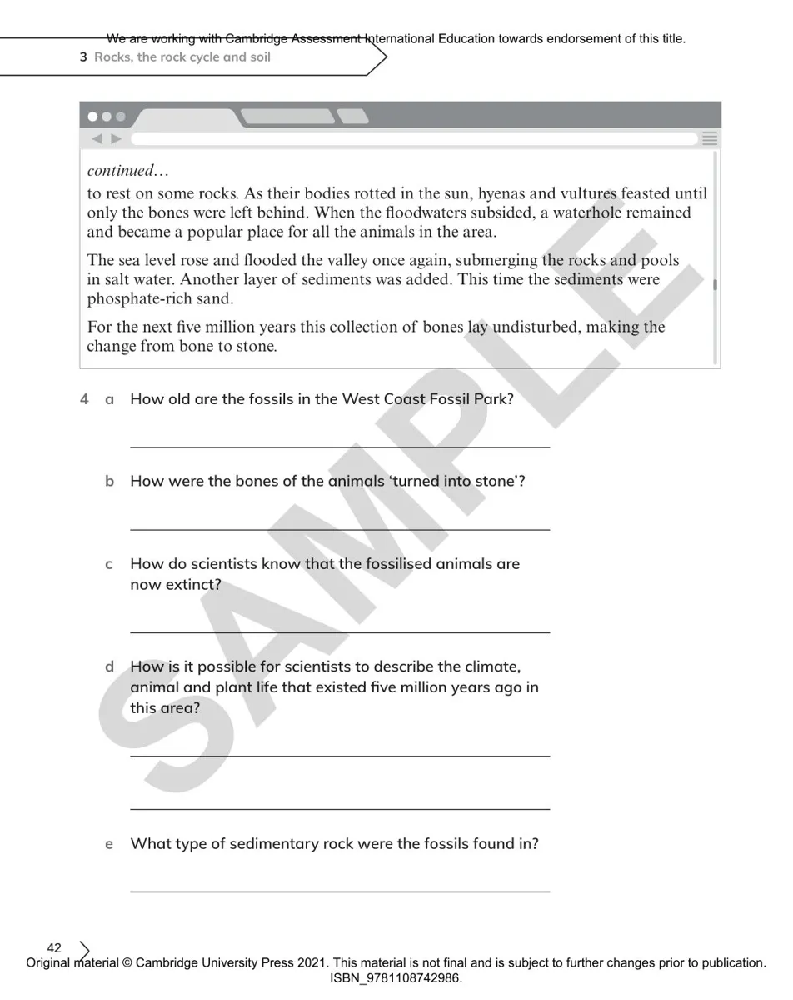
We are working with Cambridge Assessment International Education towards endorsement of this title.
3Rocks, the rock cycle and soil
continued…
to rest on some rocks. As their bodies rotted in the sun, hyenas and vultures feasted until
only the bones were left behind. When the floodwaters subsided, a waterhole remained
and became a popular place for all the animals in the area.
The sea level rose and flooded the valley once again, submerging the rocks and pools
in salt water. Another layer of sediments was added. This time the sediments were
phosphate-rich sand.
For the next five million years this collection of bones lay undisturbed, making the
change from bone to stone.
4 aHow old are the fossils in the West Coast Fossil Park?
b How were the bones of the animals ‘turned into stone’?
c
How do scientists know that the fossilised animals are
now extinct?
d How is it possible for scientists to describe the climate,
animal and plant life that existed five million years ago in
this area?
e
What type of sedimentary rock were the fossils found in?
42
Original material © Cambridge University Press 2021. This material is not final and is subject to further changes prior to publication.
ISBN_9781108742986.
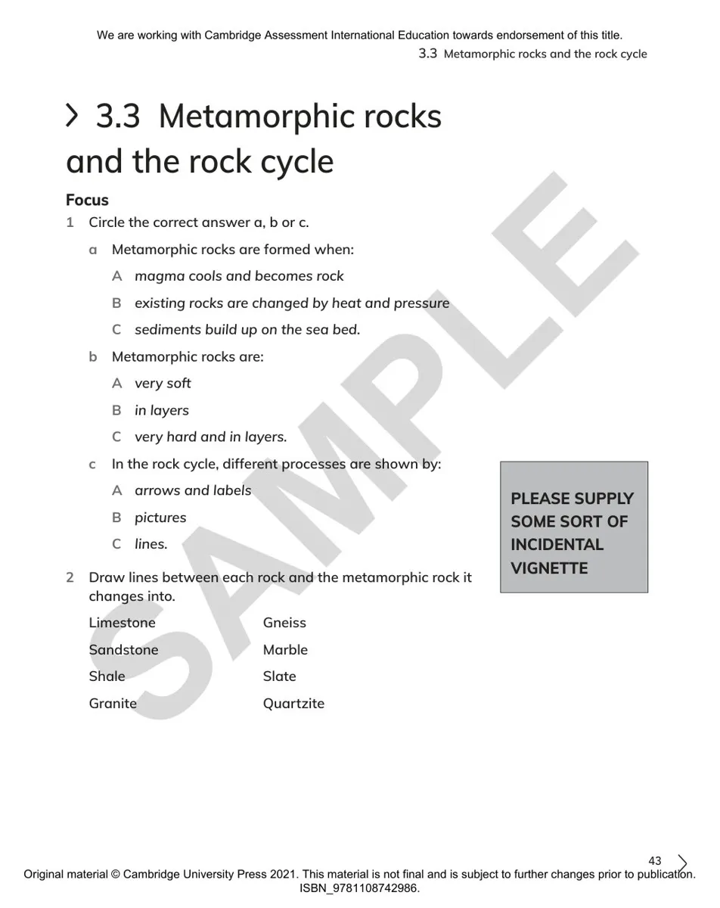
We are working with Cambridge Assessment International Education towards endorsement of this title.
3.3 Metamorphic rocks and the rock cycle
3.3 Metamorphic rocks
and the rock cycle
Focus
1 Circle the correct answer a, b or c.
a Metamorphic rocks are formed when:
Amagma cools and becomes rock
Bexisting rocks are changed by heat and pressure
Csediments build up on the sea bed.
b Metamorphic rocks are:
Avery soft
Bin layers
Cvery hard and in layers.
c
In the rock cycle, different processes are shown by:
Aarrows and labels
Bpictures
Clines.
2 Draw lines between each rock and the metamorphic rock it
changes into.
Limestone
Gneiss
Sandstone
Marble
Shale
Slate
Granite
Quartzite
PLEASE SUPPLY
SOME SORT OF
INCIDENTAL
VIGNETTE
43
Original material © Cambridge University Press 2021. This material is not final and is subject to further changes prior to publication.
ISBN_9781108742986.
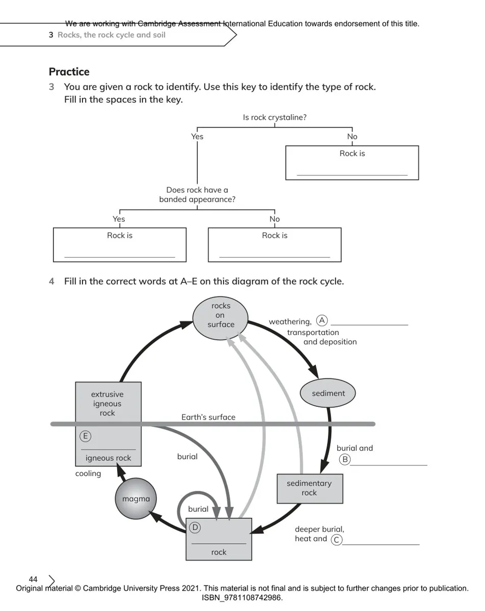
We are working with Cambridge Assessment International Education towards endorsement of this title.
3Rocks, the rock cycle and soil
Practice
3 You are given a rock to identify. Use this key to identify the type of rock.
Fill in the spaces in the key.
Is rock crystaline?
Yes
No
Rock is
Does rock have a
banded appearance?
Yes
No
Rock is
Rock is
4 Fill in the correct words at A–E on this diagram of the rock cycle.
rocks
on
surface
A
weathering,
transportation
and deposition
sediment
extrusive
igneous
rock
Earth’s surface
E
burial and
B
burial
igneous rock
cooling
sedimentary
rock
deeper burial,
heat and
C
magma
burial
D
rock
44
Original material © Cambridge University Press 2021. This material is not final and is subject to further changes prior to publication.
ISBN_9781108742986.
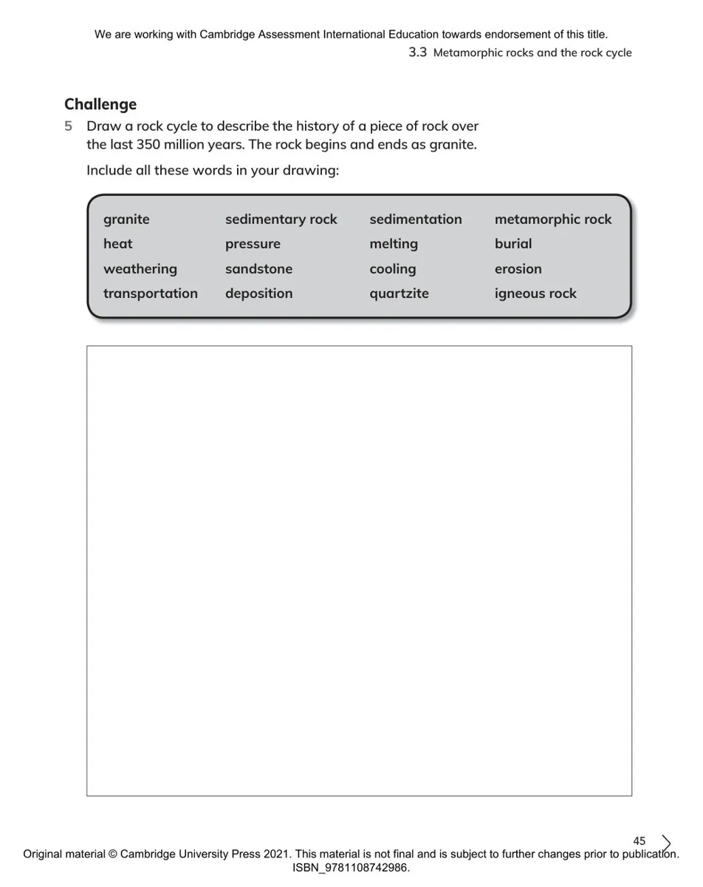
We are working with Cambridge Assessment International Education towards endorsement of this title.
3.3 Metamorphic rocks and the rock cycle
Challenge
5 Draw a rock cycle to describe the history of a piece of rock over
the last 350 million years. The rock begins and ends as granite.
Include all these words in your drawing:
granite
sedimentary rock
sedimentation
metamorphic rock
heat
pressure
melting
burial
weathering
sandstone
cooling
erosion
transportation
deposition
quartzite
igneous rock
45
Original material © Cambridge University Press 2021. This material is not final and is subject to further changes prior to publication.
ISBN_9781108742986.
We are working with Cambridge Assessment International Education towards endorsement of this title.
3Rocks, the rock cycle and soil
3.4 Soil
Focus
1 Complete these sentences. Use the words from the box.
break
soil
rocks
The Earth’s crust consists of
. Rain and ice
up the rocks. The small rock particles become
.
2
List four things you can investigate to describe the soil on the newspaper.
We have done the fi rst one as an example.
Colour
a
b
c
d
46
Original material © Cambridge University Press 2021. This material is not final and is subject to further changes prior to publication.
ISBN_9781108742986.
We are working with Cambridge Assessment International Education towards endorsement of this title.
3 List the three main types of soil
a
b
c
Practice
4 Sofia and Zara want to plant vegetables on a small plot
of ground.
The soil is hard and dry. The soil is yellowish in colour.
There are no bits of dead leaves or animals in it.
a Describe the texture and colour of the soil.
3.4 Soil
b Does the soil contain organic matter? How do you
know this?
c
Is this a sandy soil, a clay soil or a loam soil?
d Do you think the soil is suitable for growing vegetables?
Explain why or why not.
47
Original material © Cambridge University Press 2021. This material is not final and is subject to further changes prior to publication.
ISBN_9781108742986.
We are working with Cambridge Assessment International Education towards endorsement of this title.
3Rocks, the rock cycle and soil
e
Write down three ways that Sofia and Zara can change
the composition of the soil to make it more suitable for
growing vegetables.
Challenge
Read the web pages below.
Organic farming
Organic farming uses environmentally friendly farming methods. These methods
improve the soil and keep humans healthy because there are no chemicals in the food
they produce.
Organic farmers always rotate their crops. This means they do not plant the same crop
on the same soil over and over again. They use compost instead of artificial fertilisers.
Instead of using pesticides they use biological pest control.
48
Original material © Cambridge University Press 2021. This material is not final and is subject to further changes prior to publication.
ISBN_9781108742986.
We are working with Cambridge Assessment International Education towards endorsement of this title.
3.4 Soil
What is biological pest control?
The most natural way to control pests
eating plants is to make sure there are
natural predators of the pests. These
natural predators can be insects such as
ladybirds, bees and spiders, or lizards,
frogs or birds. Organic farmers plant
flowers near the crops and hedges at
the sides of the field which attract these
natural predators.
For example, aphids are a common pest
because they eat leaves and stems and
fruit. If the farmer makes sure there
are always ladybirds on the farm, the
ladybirds will eat the aphids. It is possible
to buy ladybirds for this purpose! In the
photograph you can see a ladybird eating
up all the aphids.
5 aDescribe two ways organic farmers maintain the
composition of their soil.
b What is biological pest control?
49
Original material © Cambridge University Press 2021. This material is not final and is subject to further changes prior to publication.
ISBN_9781108742986.
We are working with Cambridge Assessment International Education towards endorsement of this title.
3Rocks, the rock cycle and soil
c
How do organic farmers use biological pest control?
d Find out the names of two birds and two animals that are
natural predators of snails.
PLEASE SUPPLY
SOME SORT
OF VIGNETTE
IMAGE
50
Original material © Cambridge University Press 2021. This material is not final and is subject to further changes prior to publication.
ISBN_9781108742986.
We are working with Cambridge Assessment International Education towards endorsement of this title.
4
Food chains and
food webs
4.1 Food chains, food webs
and energy transfers
Focus
1
Look at the drawing of an ocean food web.
great white shark
jelly fish
algae
sea turtle
small fish
fish eggs
prawn
plant plankton
a Find and circle each of the food chains listed.
Use a different colour for each food chain.
fi sh eggs
jelly fi sh
sea turtle
algae
small fi sh
great white shark
plant plankton
jelly fi sh
sea turtle
great white shark
51
Original material © Cambridge University Press 2021. This material is not final and is subject to further changes prior to publication.
ISBN_9781108742986.
4Food chains and food webs
We are working with Cambridge Assessment International Education towards endorsement of this title.
b What do the arrows in the food chains show?
Practice
Look at the drawing of an ocean food web in the Focus exercise.
2 aIdentify and draw two other food chains with four links.
b Name the producers in the food web.
c
Identify and name each of the following types of
consumers in the food web:
i
herbivores
ii
omnivores
iii carnivores
d What is the source of energy for all food chains and
food webs?
52
Original material © Cambridge University Press 2021. This material is not final and is subject to further changes prior to publication.
ISBN_9781108742986.
We are working with Cambridge Assessment International Education towards endorsement of this title.
4.1 Food chains, food webs and energy transfers
e
Predict what would happen to the sea turtles if all the
great white sharks were killed.
Challenge
Read the web page below.
The Namib Desert stretches for over 1000 km along the coast of Namibia in southern
Africa. Very little rain falls there.
Many animals live on the sand dunes of the desert. Ants, beetles and termites eat
seeds and bits of grass that wind carries from the coast.
Antlions eat ants, spiders eat termites, and scorpions eat beetles and spiders.
Sunspiders eat scorpions and beetles. Lizards eat spiders, termites, beetles and
sunspiders. The sidewinder adder eats lizards.
3 aIn words, write ten food chains from the information given
in the passage above. One of the food chains should have
six links.
1
2
3
4
5
6
53
Original material © Cambridge University Press 2021. This material is not final and is subject to further changes prior to publication.
ISBN_9781108742986.
4Food chains and food webs
We are working with Cambridge Assessment International Education towards endorsement of this title.
7
6
9
10
b Draw arrows on the drawing to make a food web from the
different food chains you have written.
lizard
sidewinding adder
sunspider
spider
scorpion
antlion
ant
termite
beetle
grasses
seeds
54
Original material © Cambridge University Press 2021. This material is not final and is subject to further changes prior to publication.
ISBN_9781108742986.
We are working with Cambridge Assessment International Education towards endorsement of this title.
4.2 Harm to food chains and food webs
c
Explain why a food web is more like what happens in
nature than a food chain.
4.2 Harm to food chains
and food webs
Focus
1 Find and circle the word in the word search grid that has each
of the following meanings. Circle each word you find and
write the word next to its meaning:
a harmful or poisonous
b to build up or increase
c
chemicals used by farmers to get rid of insects and other
living things that eat their crops
d the air, land and water around us
e
a harmful metal in food chains
p
w
e
r
t
y
n
u
m
o
a
e
n
v
i
r
o
n
m
e
n
t
s
d
f
g
h
g
f
t
r
n
l
t
d
g
u
t
o
x
i
c
e
t
i
v
b
n
m
e
l
h
u
j
x
c
f
d
t
w
e
i
u
r
m
j
i
q
a
h
c
v
b
d
y
p
r
d
f
m
j
y
d
d
c
j
a
u
e
a
c
c
u
m
u
l
a
t
e
55
Original material © Cambridge University Press 2021. This material is not final and is subject to further changes prior to publication.
ISBN_9781108742986.
4Food chains and food webs
We are working with Cambridge Assessment International Education towards endorsement of this title.
2 Decide if each of the sentences is true or false.
Tick a box () to show your answer.
a Harmful substances can damage living
things in food chains.
b Harmful substances move through food
chains instead of energy.
c
Harmful substances in food chains cannot
affect humans.
d Some harmful substances in a food chain
break down in the bodies of the living things.
Practice
3 A factory has dumped a harmful chemical into a river.
The drawing shows a food chain in the river and the number
of units of the harmful chemical X in each living thing.
leaf of pond weed
tadpole
(20 units)
fish
(240 units)
(4 units)
True
False
heron
(500 units)
a Suggest a way that chemical X entered the food chain.
b Which living thing contained the most units of chemical X?
56
Original material © Cambridge University Press 2021. This material is not final and is subject to further changes prior to publication.
ISBN_9781108742986.
We are working with Cambridge Assessment International Education towards endorsement of this title.
4.2 Harm to food chains and food webs
c
How many times more time units are there in the fish than
in a pond weed leaf?
d i
What do you notice about the amount of chemical X in
a living thing and the position of the living thing in the
food chain?
ii
Explain why this is so.
Challenge
Read the web page below.
DDT was one of the first and most powerful pesticides developed to kill insects. It was
widely used to control the spread of malaria. Mosquitoes spread the malaria parasite
when they bite people. DDT was also used a lot in the 1960s to spray crops, mostly in
Europe and North America.
Much later, scientists discovered that DDT can move through food chains because
animals’ bodies cannot get rid of it. DDT is stored mainly in body fat. It also remains in
the environment for a long time before it breaks down. Scientists also found that birds
of prey, such as eagles and hawks, which are affected by DDT, lay eggs with very thin
shells. Humans who eat plants or animals that contain DDT are more likely to develop
cancer and other serious diseases.
DDT was banned in the 1980s and is no longer used as a pesticide.
57
Original material © Cambridge University Press 2021. This material is not final and is subject to further changes prior to publication.
ISBN_9781108742986.
4Food chains and food webs
We are working with Cambridge Assessment International Education towards endorsement of this title.
4 aWhy was DDT used a lot in the past?
b i
Explain how DDT can enter a food chain.
ii
Why can DDT move through food chains?
c
i
Suggest two reasons why arctic animals such as seals
and polar bears often have high levels of DDT in their
bodies, even though DDT is no longer used.
ii
Some people living in arctic regions eat seals.
Why can this be dangerous for them?
58
Original material © Cambridge University Press 2021. This material is not final and is subject to further changes prior to publication.
ISBN_9781108742986.
We are working with Cambridge Assessment International Education towards endorsement of this title.
4.2 Harm to food chains and food webs
d In a food chain affected by DDT, explain why a frog that
eats three locusts does not die, but an owl that eats three
frogs dies. What is the word that describes this?
e
Why do you think the number of birds of prey in Europe
and North America decreased a lot in the 1960s?
f
Do some research to find out the full name of DDT.
PLEASE SUPPLY
SOME SORT OF
INCIDENTAL
VIGNETTE
59
Original material © Cambridge University Press 2021. This material is not final and is subject to further changes prior to publication.
ISBN_9781108742986.
We are working with Cambridge Assessment International Education towards endorsement of this title.
5
Forces and
electricity
5.1 Mass and weight
Focus
1 aName the instrument used to measure mass.
b Name the units mass is measured in.
c
Name the instrument used to measure weight.
d Name the unit weight is measured in.
2 Complete these sentences about mass and weight:
Mass is the amount of
in an object.
Weight is the amount of
on an object caused by
the force of
.
60
Original material © Cambridge University Press 2021. This material is not final and is subject to further changes prior to publication.
ISBN_9781108742986.
We are working with Cambridge Assessment International Education towards endorsement of this title.
5.1 Mass and weight
Practice
3 Read the following statements about mass and weight.
Mark each statement as true () or false ().
a Mass and weight are the same.
b We measure mass in kilograms.
c
We measure weight in Newtons.
d Weight is the amount of matter in an object.
4 Class 6 measured the mass and weight of four objects.
Complete their table of results.
Remember to include the correct units for each measurement.
Object
Mass
Weight
Brick
1
Bag of books
25
Bag of potatoes
10
Bag of cement
400
5 If you pull on an object hanging from a forcemeter, would this
give you an accurate reading of the object’s weight?
Say why or why not.
61
Original material © Cambridge University Press 2021. This material is not final and is subject to further changes prior to publication.
ISBN_9781108742986.
We are working with Cambridge Assessment International Education towards endorsement of this title.
5Forces and electricity
Challenge
6 aWhat is this instrument called?
N
50
40
30
20
10
0
b The instrument is measuring the weight of a bag of oranges.
What does the bag of oranges weigh?
c
What is the mass of the bag of oranges?
7 Mr Large has a mass of 90 kg on Earth. He travels to Planet
Zogg where the gravity is only half as strong as it is on Earth.
What will Mr Large’s weight be on Planet Zogg?
Explain your answer.
5.2 The effects of forces
Focus
1
In each of the following examples, identify the effect of the
force on the object. Choose from:
•
Makes an object move.
•
Changes the direction of a moving object.
•
Changes the shape of an object.
•
Changes the speed of an object.
62
Original material © Cambridge University Press 2021. This material is not final and is subject to further changes prior to publication.
ISBN_9781108742986.
We are working with Cambridge Assessment International Education towards endorsement of this title.
5.2 The effects of forces
a Zara pedals her bike faster.
b Arun cracks an egg into a bowl.
63
Original material © Cambridge University Press 2021. This material is not final and is subject to further changes prior to publication.
ISBN_9781108742986.
We are working with Cambridge Assessment International Education towards endorsement of this title.
5Forces and electricity
c
Sofi a pushes open a door.
BEEHIVE
ILLUSTRATION
TO CORRECT
d Marcus hits a tennis ball back to Arun.
64
Original material © Cambridge University Press 2021. This material is not final and is subject to further changes prior to publication.
ISBN_9781108742986.
We are working with Cambridge Assessment International Education towards endorsement of this title.
5.2 The effects of forces
Practice
2 Write down alongside each picture how the soccer ball is
affected by forces applied to it.
a
b
65
Original material © Cambridge University Press 2021. This material is not final and is subject to further changes prior to publication.
ISBN_9781108742986.
We are working with Cambridge Assessment International Education towards endorsement of this title.
5Forces and electricity
c
d
66
Original material © Cambridge University Press 2021. This material is not final and is subject to further changes prior to publication.
ISBN_9781108742986.
We are working with Cambridge Assessment International Education towards endorsement of this title.
5.2 The effects of forces
3 Draw a force diagram in the space to show the two forces
that affect the soccer ball when it is resting on the ground.
Challenge
4 aYou have to demonstrate five different effects of forces.
You are given a space on the floor next to a wall, a tennis
ball and a strip of sandpaper.
Fill in the actions you would do and the effect of the force
on the tennis ball in the table below.
The first one is done as an example.
Action with tennis ball
Effect of force
Roll tennis ball across floor
Make tennis ball move
67
Original material © Cambridge University Press 2021. This material is not final and is subject to further changes prior to publication.
ISBN_9781108742986.
5Forces and electricity
We are working with Cambridge Assessment International Education towards endorsement of this title.
b Draw a force diagram to show the forces involved in one
of the actions you listed on the table.
5.3 Floating and sinking
Focus
1 Complete the sentences by fi lling in the correct words from
the box.
mass displaced fl oat sink upthrust equal less
An object will
if the mass of the object is
less than, or
to, the mass of water displaced
by
.
An object will
if the mass of the object is
greater than the mass of water
by upthrust.
68
Original material © Cambridge University Press 2021. This material is not final and is subject to further changes prior to publication.
ISBN_9781108742986.
We are working with Cambridge Assessment International Education towards endorsement of this title.
5.3 Floating and sinking
2 Complete the diagram with labelled arrows to show why the
ping pong ball fl oats and the tennis ball sinks towards the
bottom of the tank.
Practice
Read the web page below.
Sofi a and Zara are doing an investigation to see how mass affects fl oating and
sinking.
They have a glass container of water. They have made a ‘raft’ out of a square piece of
fl at polystyrene which fl oats on the surface. They have a balance.
‘Let’s try putting coins on the raft and see how many we put on before the raft sinks,’
says Zara.
Sofi a puts a pile of different coins on the table. ‘We have to use the same sized coins
– let’s sort them out.’
Zara puts a coin on the balance. Each coin has a mass of 5 g.
69
Original material © Cambridge University Press 2021. This material is not final and is subject to further changes prior to publication.
ISBN_9781108742986.
5Forces and electricity
We are working with Cambridge Assessment International Education towards endorsement of this title.
3 aWhat were the control, the independent and the
dependent variables in their investigation?
b Why did the polystyrene ‘raft’ float on the water?
c
The girls put seven coins on the raft before it sank.
Why did the raft sink?
d Suggest how the girls could have changed the raft and
put more coins on it before it sank.
70
Original material © Cambridge University Press 2021. This material is not final and is subject to further changes prior to publication.
ISBN_9781108742986.
We are working with Cambridge Assessment International Education towards endorsement of this title.
5.3 Floating and sinking
e
Draw a force diagram to show the raft beginning to sink.
71
Original material © Cambridge University Press 2021. This material is not final and is subject to further changes prior to publication.
ISBN_9781108742986.
5Forces and electricity
We are working with Cambridge Assessment International Education towards endorsement of this title.
Challenge
Submarines
Submarines are able to fl oat or sink. How do they manage to do this?
Look at the cut sections of a submarine in the pictures:
vents
outer hull
inner hull
ballast tanks
opening
The hull of the submarine has two layers. In between the layers there are big storage
spaces. These are called the ballast tanks. When the submarine is fl oating, the ballast
tanks are fi lled with air. This makes the total mass of the submarine less than the
mass of the water it displaces, so the submarine fl oats.
bmarine f oats.
When the submarine needs to sink, it
opens the doors of the ballast tanks and
lets in water. The water takes the place of
the air.
f
72
Original material © Cambridge University Press 2021. This material is not final and is subject to further changes prior to publication.
ISBN_9781108742986.
We are working with Cambridge Assessment International Education towards endorsement of this title.
5.3 Floating and sinking
4 aExplain how filling the ballast tanks with water causes the
submarine to sink.
b Draw a section of the submarine, like the ones above,
but when it is completely submerged. Show the forces
involved with arrows.
5 Find out the answer to each of the following questions.
a How can the people inside the submarine breathe when
the submarine is submerged?
b How long can a submarine remain submerged?
c
What is the longest time a submarine has
remained submerged?
73
Original material © Cambridge University Press 2021. This material is not final and is subject to further changes prior to publication.
ISBN_9781108742986.
5Forces and electricity
We are working with Cambridge Assessment International Education towards endorsement of this title.
5.4 Different circuits and
circuit diagrams
Focus
1 Draw lines linking each component with its symbol.
Component
Symbol
74
Original material © Cambridge University Press 2021. This material is not final and is subject to further changes prior to publication.
ISBN_9781108742986.
We are working with Cambridge Assessment International Education towards endorsement of this title.
5.4 Different circuits and circuit diagrams
Practice
2
a List the components in this circuit.
b Will the buzzer come on? Explain why or why not.
3 Look at the two circuits, A and B.
A
B
+
3V
+
3V
a Which circuit is a series circuit and which circuit is a
parallel circuit?
75
Original material © Cambridge University Press 2021. This material is not final and is subject to further changes prior to publication.
ISBN_9781108742986.
5Forces and electricity
We are working with Cambridge Assessment International Education towards endorsement of this title.
b In which circuit, A or B, will the lamps shine more brightly?
Explain why.
c
Draw circuit diagrams for circuits A and B.
Challenge
1
1
2
3
2
3
A
B
4 aWhich circuits are parallel circuits and which are
series circuits?
C
76
Original material © Cambridge University Press 2021. This material is not final and is subject to further changes prior to publication.
ISBN_9781108742986.
We are working with Cambridge Assessment International Education towards endorsement of this title.
5.4 Different circuits and circuit diagrams
b In which circuit will the lamps shine more brightly – circuit B
or C? Explain your answer.
c
In circuit B, which lamp will shine the brightest – 1, 2 or 3?
Explain your answer.
d In circuit A, which lamp or lamps will not light up?
Explain your answer.
e
In circuit A, what would happen if you opened both
the switches?
f
Draw a parallel circuit with a 3V battery, two switches
and two buzzers.
77
Original material © Cambridge University Press 2021. This material is not final and is subject to further changes prior to publication.
ISBN_9781108742986.
We are working with Cambridge Assessment International Education towards endorsement of this title.
6
Light and the
Solar System
6.1 Reflection
Focus
1 The diagrams A–D show light reflecting off plane mirrors.
Complete each of the diagrams by adding the missing ray.
Measure angles with a protractor.
Label all the rays as the incident ray or the reflected ray.
A
B
C
D
78
Original material © Cambridge University Press 2021. This material is not final and is subject to further changes prior to publication.
ISBN_9781108742986.
We are working with Cambridge Assessment International Education towards endorsement of this title.
6.1 Reflection
Practice
2Diagrams A–F show light reflecting off plane mirrors.
A
B
C
D
E
F
a Which diagram shows a periscope?
b Which two diagrams are incorrect?
79
Original material © Cambridge University Press 2021. This material is not final and is subject to further changes prior to publication.
ISBN_9781108742986.
6Light and the Solar System
We are working with Cambridge Assessment International Education towards endorsement of this title.
c
Re-draw the two diagrams that are incorrect in the
space below.
Measure your angles with a protractor.
Label the incident ray and the reflected ray on each
diagram.
80
Original material © Cambridge University Press 2021. This material is not final and is subject to further changes prior to publication.
ISBN_9781108742986.
We are working with Cambridge Assessment International Education towards endorsement of this title.
6.1 Reflection
Challenge
BEEHIVE
ILLUSTRATION
TO CORRECT
3 aWhat is Zara using the periscope for?
b Describe how this periscope works.
81
Original material © Cambridge University Press 2021. This material is not final and is subject to further changes prior to publication.
ISBN_9781108742986.
6Light and the Solar System
We are working with Cambridge Assessment International Education towards endorsement of this title.
4 a
The man in the photograph is
in a submerged submarine.
He is using a periscope.
What do you think he is
using the periscope for?
b Suggest other ways in which periscopes are useful.
6.2 Refraction
Focus
1 Explain why the pencil in the picture appears to be bent.
Cross out the incorrect alternatives in the sentences below.
The pencil is bent because of refl ection/refraction.
A ray of light passes from the pencil through the water/air to
the glass. The ray bends/straightens when it passes through
the glass to the air/water and into our eyes.
We see the bent pencil as a trick/optical illusion.
82
Original material © Cambridge University Press 2021. This material is not final and is subject to further changes prior to publication.
ISBN_9781108742986.
We are working with Cambridge Assessment International Education towards endorsement of this title.
6.2 Refraction
2 What happens when you shine a ray of light through a prism?
3 Cross out the incorrect alternatives in the sentences about
lenses below.
A lens is a transparent piece of glass or plastic with at least
one straight/curved surface.
A convex lens makes things look bigger/smaller because light
rays bend inwards/outwards as they leave the lens.
Practice
BEEHIVE
ILLUSTRATION
TO CORRECT
4 Draw in the light ray on the diagram above to show how light
travels from the pencil to Marcus. Draw a dotted line to show
the optical illusion that Marcus sees.
83
Original material © Cambridge University Press 2021. This material is not final and is subject to further changes prior to publication.
ISBN_9781108742986.
6Light and the Solar System
We are working with Cambridge Assessment International Education towards endorsement of this title.
5 The diagram below shows white light splitting into colours.
White light
a What is the triangular glass object?
b How does it affect light passing through it?
c
Label the colours on the diagram.
6 aWhat type of lenses are used in binoculars?
b Explain why.
Challenge
Read the web page below.
Have you ever read a story or seen a movie where someone is trying to walk across a
desert and is desperate for water? They keep seeing water in the distance only to find it
is just more sand.
Look at the photograph taken in the Namib desert. It really looks as though the thorn
trees are reflected in a lake of water … but it is just sand.
This is a mirage and it is an optical illusion.
84
Original material © Cambridge University Press 2021. This material is not final and is subject to further changes prior to publication.
ISBN_9781108742986.
We are working with Cambridge Assessment International Education towards endorsement of this title.
6.2 Refraction
7 Use the internet or reference books to fi nd out how a mirage
happens.
85
Original material © Cambridge University Press 2021. This material is not final and is subject to further changes prior to publication.
ISBN_9781108742986.
6Light and the Solar System
We are working with Cambridge Assessment International Education towards endorsement of this title.
6.3 The Solar System
Focus
1 aLabel the Sun and the eight planets in the boxes on
the diagram.
b Name the two movements that all the planets make.
86
Original material © Cambridge University Press 2021. This material is not final and is subject to further changes prior to publication.
ISBN_9781108742986.
We are working with Cambridge Assessment International Education towards endorsement of this title.
6.3 The Solar System
2
1
2
3
4
5
6
7
a What movement causes the Moon to have different
shapes at different times?
b How long does it take for the Moon to make this movement?
c
Between which numbers is the Moon waning?
Practice
3
87
Original material © Cambridge University Press 2021. This material is not final and is subject to further changes prior to publication.
ISBN_9781108742986.
6Light and the Solar System
We are working with Cambridge Assessment International Education towards endorsement of this title.
a Name the planets on the diagram
b How long are an ‘earth day’ and an ‘earth year’?
c
Which planets take more than an earth year to complete
their orbit around the Sun? Explain why.
d Which planet has the shortest year? Explain why.
e
Why does this diagram not show the solar
system accurately?
4
Earth
On the diagram:
a Draw and label the Sun.
b Label the eight phases of the Moon.
88
Original material © Cambridge University Press 2021. This material is not final and is subject to further changes prior to publication.
ISBN_9781108742986.
We are working with Cambridge Assessment International Education towards endorsement of this title.
6.3 The Solar System
Challenge
Read the web page below.
Compare the planets Earth, Mars and Jupiter
Mars is 240 million km from the Sun compared to
Earth, which is 150 million km from the Sun. Mars is
often called ‘the red planet’ – the red colour is due
to iron in the rocks. Mars’ atmosphere consists mainly
of carbon dioxide. In winter temperatures fall to
–125 °C. On parts of Earth temperatures drop to
−50 °C.
Mars has two moons, called Phobos and Deimos.
Mars takes 25 Earth hours to make a complete turn on its axis and 687 Earth days to complete
an orbit around the Sun.
Spacecraft that have landed on the surface of Mars reported a rocky surface with frequent dust
storms and no life.
Jupiter is composed almost entirely of gases
such as hydrogen and helium – it is sometimes
called a ‘gas giant’. The temperature is about
−153 °C. Jupiter is 800 million km away from
the Sun. It takes 12 Earth years to orbit the
Sun.
Jupiter takes 10 Earth hours to make a
complete turn on its axis.
Jupiter has 16 known moons. Four of these
moons are larger than the rest and easily visible
to us on Earth through telescopes. One of
Jupiter’s moons, called Io, is about the same size
as our Moon. Ganymede is the largest moon
in the Solar System and is in fact bigger than
Mercury.
Juno spacecraft is orbiting Jupiter until 2021 and sending amazing photographs of swirling gases
back to Earth.
89
Original material © Cambridge University Press 2021. This material is not final and is subject to further changes prior to publication.
ISBN_9781108742986.
6Light and the Solar System
We are working with Cambridge Assessment International Education towards endorsement of this title.
5 aUse the information about Mars and Jupiter to complete
this table:
Planet
Earth
Mars
Jupiter
Distance from Sun
Time taken to make one turn on
axis
Time taken to make one orbit
round the Sun
Number of moons
Lowest temperature in winter
What is planet made of?
b Identify a pattern in the time taken to make one orbit
round the Sun for the three planets. Explain the pattern.
c
Give two reasons why it is possible for plants, animals and
humans to live on Earth.
90
Original material © Cambridge University Press 2021. This material is not final and is subject to further changes prior to publication.
ISBN_9781108742986.
We are working with Cambridge Assessment International Education towards endorsement of this title.
6.3 The Solar System
d Give two reasons why it is not possible for plants, animals
and humans to live on Jupiter.
e
Suppose it was possible for people from Earth to live on
Mars. What would be familiar about daily life?
6 The four biggest moons of Jupiter are often called the
‘Galilean Moons’ after the astronomer Galileo Galilei. Find out
more about Galileo and answer these questions.
a Where and when was Galileo born?
b How did Galileo manage to find out more about the planets?
c
What else, besides the four biggest moons of Jupiter, did
Galileo identify for the first time in the Solar System?
d Why was Galileo put under house arrest?
91
Original material © Cambridge University Press 2021. This material is not final and is subject to further changes prior to publication.
ISBN_9781108742986.